<!doctype html>
<html lang="en">
<head>
  <meta charset="utf-8">
  <meta name="viewport" content="width=device-width, initial-scale=1">
  <title>arxiv digest — 2026-10-31</title>
  <style>
:root {
  --bg: #ffffff;
  --fg: #1f2328;
  --muted: #59636e;
  --border: #d0d7de;
  --card: #f6f8fa;
  --link: #0969da;
}
body {
  max-width: 980px;
  margin: 0 auto;
  padding: 2rem 1rem 5rem;
  font-family: -apple-system, BlinkMacSystemFont, "Segoe UI", Helvetica, Arial, sans-serif;
  line-height: 1.55;
  color: var(--fg);
  background: var(--bg);
}
a { color: var(--link); }
img { max-width: 100%; height: auto; }
pre, code { background: var(--card); border-radius: 6px; }
pre { padding: 1rem; overflow-x: auto; }
blockquote { border-left: 4px solid var(--border); padding-left: 1rem; color: var(--muted); }
details { margin: 0.6rem 0; }
summary { cursor: pointer; font-weight: 600; }
.paper-figures-scroll {
  display: flex;
  gap: 1rem;
  overflow-x: auto;
  overscroll-behavior-x: contain;
  padding: 0.75rem 0.25rem 1rem;
  margin: 1rem 0 1.25rem;
  border-top: 1px solid var(--border);
  border-bottom: 1px solid var(--border);
  scroll-snap-type: x proximity;
}
.paper-figure-card {
  flex: 0 0 min(260px, 72vw);
  scroll-snap-align: start;
  background: var(--card);
  border: 1px solid var(--border);
  border-radius: 12px;
  padding: 0.55rem;
}
.paper-figure-card img {
  display: block;
  width: 100%;
  max-height: 240px;
  object-fit: contain;
  background: white;
  border-radius: 8px;
}
.paper-figure-caption {
  display: block;
  margin-top: 0.5rem;
  color: var(--muted);
  font-size: 0.85rem;
}
.figure-strip-hint {
  color: var(--muted);
  font-size: 0.9rem;
  margin-bottom: -0.3rem;
}
</style>
  <script>
    window.MathJax = {
      tex: {
        inlineMath: [['$', '$'], ['\\(', '\\)']],
        displayMath: [['$$', '$$'], ['\\[', '\\]']],
        processEscapes: true,
        processEnvironments: true
      },
      options: {
        skipHtmlTags: ['script', 'noscript', 'style', 'textarea', 'pre', 'code'],
        ignoreHtmlClass: 'tex2jax_ignore',
        processHtmlClass: 'tex2jax_process'
      }
    };
  </script>
  <script id="MathJax-script" async
    src="https://cdn.jsdelivr.net/npm/mathjax@3/es5/tex-chtml.js"></script>
</head>
<body>
<header style="background-color: #333; color: white; padding: 15px; margin-bottom: 20px;">
  <h1 style="margin: 0; font-size: 24px;">
    <a href="https://ochelpan.github.io/arXiv_clean/" style="color: white; text-decoration: none;">Main</a>
  </h1>
</header>

<h1>Daily arXiv Report</h1>

<hr>
<p>
<a href="index.html">← Index</a>
 · <a href="papers_07.html">← Previous</a> · <a href="papers_09.html">Next →</a>
</p>
<hr>

<h2>Papers 141–160</h2>
<p><a id="paper-2610.40139"></a></p>
<h3 id="investigation-of-perovskite-related-oxides-structural-and-magnetic-properties"><a href="http://arxiv.org/abs/2610.40139v1">Investigation of perovskite related oxides: structural and magnetic properties</a></h3>
<p><strong>Authors:</strong> Antara Sarkar<br>
<strong>Type:</strong> both · <strong>Category:</strong> strongly correlated electrons · <strong>PDF:</strong> <a href="https://arxiv.org/pdf/2610.40139v1">https://arxiv.org/pdf/2610.40139v1</a><br>
<strong>Analysis basis:</strong> full PDF text, analyzed in chunks
<strong>Topic relevance:</strong> <code>analog quantum simulation</code> <strong>1/5</strong></p>
<div class="figure-strip-hint">↔ Scroll figures horizontally</div>
<div class="paper-figures-scroll">
<figure class="paper-figure-card">
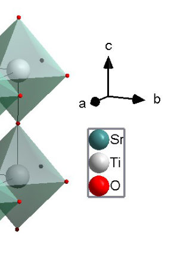
<figcaption class="paper-figure-caption"><b>Fig 1.</b> Fig. 1.1: Structure of perovskite ABO3 (A: Sr and B: Ti )</figcaption>
</figure>
<figure class="paper-figure-card">
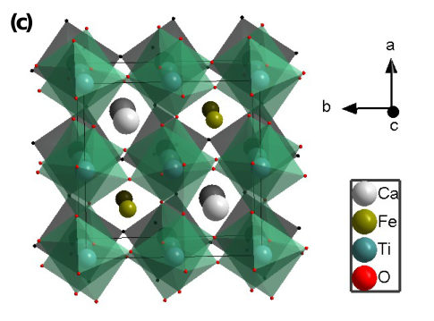
<figcaption class="paper-figure-caption"><b>Fig 2.</b> Fig. 1.2: Various ordering in perovskite structure showing a) Rocksalt ordering in</figcaption>
</figure>
<figure class="paper-figure-card">
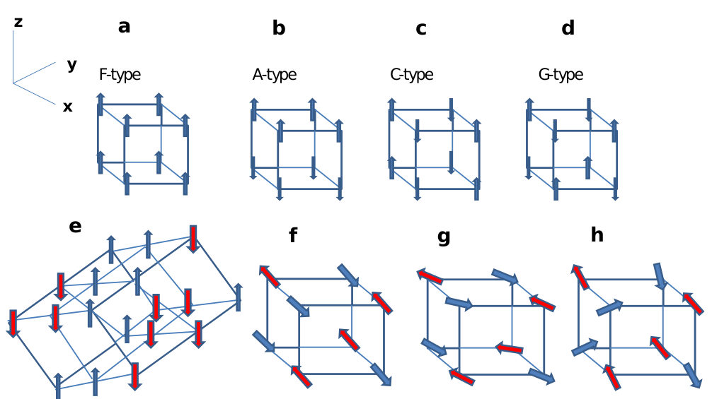
<figcaption class="paper-figure-caption"><b>Fig 3.</b> Fig. 1.3: Antiferromagnetic spin structures of (a-d) various structures of perovskites, and</figcaption>
</figure>
<figure class="paper-figure-card">
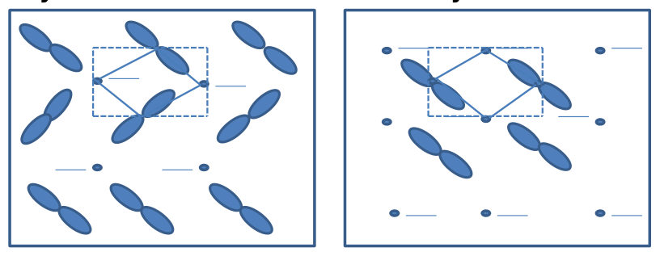
<figcaption class="paper-figure-caption"><b>Fig 4.</b> Fig. 1.4: Orbital orientation schemes of layers 1 and 2 in a)A2CuMO6 (M: Mn), b)</figcaption>
</figure>
<figure class="paper-figure-card">
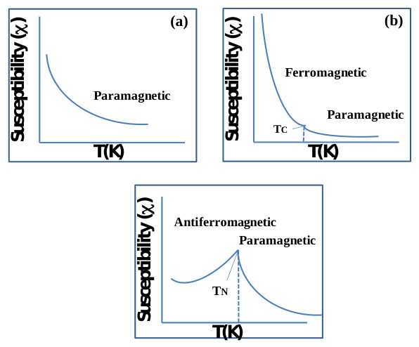
<figcaption class="paper-figure-caption"><b>Fig 5.</b> Fig. 1.5: Magnetic susceptibility vs. temperature plot of a) paramagnetism, b) ferromagnetism and c) antiferromagnetism.</figcaption>
</figure>
</div>

<p><strong>Summary.</strong> This work systematically investigates the structural and magnetic properties of various perovskite oxides, focusing on how substituting rare-earth and transition metal ions influences magnetic interactions. By combining structural and magnetic measurements, the authors demonstrate that phenomena like spin reorientation and magnetic ordering are critically dependent on lattice distortions and competing exchange mechanisms.</p>
<p><strong>Why it may be interesting.</strong> The detailed study of magnetic transitions, spin reorientation, and the role of orbital interactions in perovskites provides rich material for understanding emergent quantum phenomena in strongly correlated materials.</p>
<details>
<summary>Detailed structure</summary>
<p><strong>Main problem.</strong> The study investigates the structure-dependent magnetic properties of perovskite-related oxides, which are crucial for multiferroics, magnetocaloric, and spintronic applications.</p>
<p><strong>Main result.</strong> The magnetic behavior, including Curie temperatures, spin-glass transitions, and spin reorientations, is highly sensitive to structural distortions, rare-earth ion size, and the interplay between superexchange and double exchange interactions.</p>
<p><strong>Method.</strong> The research employs a combination of structural characterization (PXRD, XPS, EDAX) and magnetic measurements (magnetic susceptibility, isothermal magnetization) across various substituted perovskite compositions.</p>
<p><strong>Model / system.</strong> The physical systems are perovskite oxides ($   ext{ABO}<em 1-x>3$) incorporating rare-earth (R) and transition metal (TM) ions (e.g., $   ext{R}_x    ext{Sr}</em>}   ext{Fe<em 0.5>{0.5}   ext{Mn}</em>_3$). The complexity arises from the interplay between orbital interactions, structural distortions (like octahedral tilting), and competing magnetic exchange mechanisms.}   ext{O</p>
<p><strong>Key observables.</strong> Magnetic susceptibility ($\chi$ vs T), magnetic hysteresis ($M$ vs $H$), transition temperatures ($T_C, T_N, T_S$), lattice parameters ($a, b, c$), and bond angles.</p>
<p><strong>Important parameters / regimes.</strong> Rare-earth ion size/substitution ($x$), temperature (T), applied magnetic field (H), and the degree of structural distortion.</p>
<p><strong>Assumptions / limitations.</strong> The magnetic properties are assumed to be governed by superexchange and double exchange interactions modulated by crystal structure.</p>
<p><strong>Figures summary.</strong> The notes reference multiple figures showing magnetic susceptibility vs. temperature, magnetization vs. field, and structural parameter changes across different compositions.</p>
<p><strong>Paper structure.</strong> The paper systematically investigates several specific perovskite systems (e.g., $ ext{Ho-Pr-Mn-Cr-O}$, $  ext{R-Sr-Fe-Mn-O}$) using a suite of characterization techniques, culminating in a comparative summary table of structural and magnetic data.</p>
</details>
<details>
<summary>Abstract</summary>
<p>Perovskites exist in varied structures and show structure dependent magnetic properties which is of great interest in the field of multiferroics, magnetocaloric and spintronic devices. Here we intend to study the various rare-earth(R) and transition metal (TM) ion interactions depending on their structures. Different Curie temperature, spinglass transition and spin reorientation transitions were observed depending on the degree of interactions and structural properties. It is interesting to study the role of orbital interactions, disorder in magnetic transitions leading to change in superexchange and double exchange interaction. On substitution at A-site or B-site results in change in magnetic interactions, as well as creates structural distortions. We also obtained results where the spin interaction of the transition metal and rare-earth interaction, magnetic anisotropy, orientations of orbitals, disorder induced interactions were observed.</p>
</details>
<p><sub><a href="#top">↑ back to top</a></sub></p>

<p><a id="paper-2610.38989"></a></p>
<h3 id="magnetism-in-a-homometallic-square-planar-cumath1164mathmath1165mathcumath1166math-metallacrown"><a href="http://arxiv.org/abs/2610.38989v1">Magnetism in a homometallic square-planar Cu$({\mathrm{II})}$$_4$Cu$({\mathrm{II})}$ metallacrown</a></h3>
<p><strong>Authors:</strong> Luca Bischof, Ariyan Tavakoli, Sascha Pietruska, Lena Spillecke, Ina Heckelmann, Changhyun Koo, Luca M. Carrella, Eva Rentschler, Hans Christian Schneider, Rüdiger Klingeler<br>
<strong>Type:</strong> both · <strong>Category:</strong> strongly correlated electrons · <strong>PDF:</strong> <a href="https://arxiv.org/pdf/2610.38989v1">https://arxiv.org/pdf/2610.38989v1</a><br>
<strong>Analysis basis:</strong> full PDF text, analyzed in chunks
<strong>Topic relevance:</strong> <code>analog quantum simulation</code> <strong>1/5</strong></p>
<div class="figure-strip-hint">↔ Scroll figures horizontally</div>
<div class="paper-figures-scroll">
<figure class="paper-figure-card">
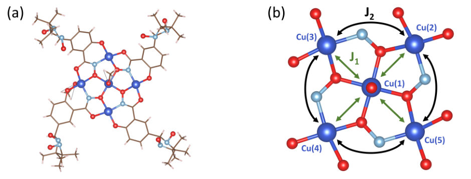
<figcaption class="paper-figure-caption"><b>Fig 1.</b> FIG. 1. Top view of (a) the crystal structure and (b) the central molecular motif and magnetic couplings of Cu4Cu. In (a), a single complex is shown consisting of four repetition units [Cu–N–O] with ligand L. The crystal packing is shown in the SM [14]. The magnetic model in (b) is sketched with couplings as arrows indicating isotropic magnetic interactions between the central Cu(II) moment and its neighbors with coupling strength J1 (green), and between neighboring outer Cu(II) moments with coupling strength J2 (black). Ions and bonds coloring: Cu (blue), O (red), N (light blue), Si (green), C (brown), and H (white).</figcaption>
</figure>
<figure class="paper-figure-card">
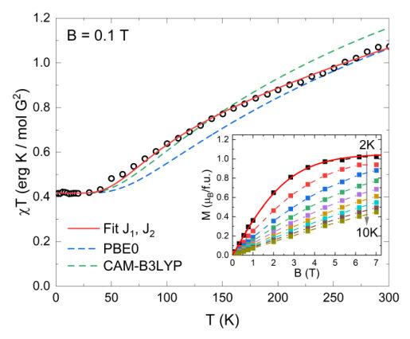
<figcaption class="paper-figure-caption"><b>Fig 2.</b> FIG. 2. Temperature dependence of the static magnetic sus- ceptibility measured at B = 0.1 T on a fixed powder sample is plotted as χT. The red solid line shows the best fit of the spin hamiltonian Eq. 1 with the parameters described in the main text. Further lines display the simulated χT curves with the magnetic exchange couplings J1, J2 calculated by PBE0 (blue) and CAM-B3LYP (green) as described in Sec. IV. In- set: Isothermal magnetization at low temperatures from 2 K to 10 K with a temperature increment of 1 K between the curves. The red solid line shows the fit of the Brillouin func- tion Eq. 2 to the data at T = 2 K.</figcaption>
</figure>
<figure class="paper-figure-card">
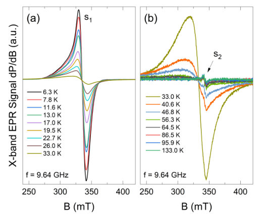
<figcaption class="paper-figure-caption"><b>Fig 3.</b> FIG. 3. X-band EPR spectra of fixed powder sample of CuII[12-MCCuII-4] at (a) low and (b) intermediate temper- atures exhibit the strong low-temperature resonance line s1 and the thermally-induced feature s2. Note different ordi- nates in (a) and (b) such that the spectrum at 33 K is the least intense spectrum in (a) and the most intense spectrum in (b).</figcaption>
</figure>
<figure class="paper-figure-card">
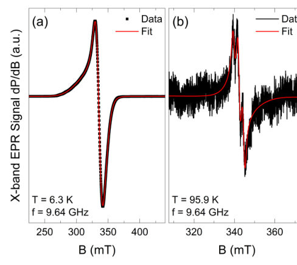
<figcaption class="paper-figure-caption"><b>Fig 4.</b> FIG. 4. Fitting of the X-band EPR spectra showing (a) the low-temperature signal s1 at T = 6.3 K and (b) the thermally- induced resonance line s2 at T = 95.9 K. Solid red lines show the best fits to the data based on an S = 1/2 spin model with anisotropic g-factors, line broadening and hyperfine interac- tion (only b) as described in the main text. The resulting spin Hamiltonian parameters are summarized in Tab. I.</figcaption>
</figure>
<figure class="paper-figure-card">
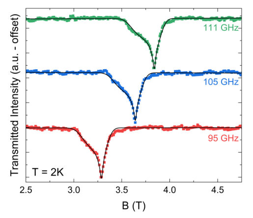
<figcaption class="paper-figure-caption"><b>Fig 5.</b> FIG. 5. High-frequency/high-field EPR spectra of Cu4Cu at T = 2 K exhibit the low-temperature EPR signal s1. Solid black lines describe the best simultaneous fit to the three transmission spectra with microwave frequencies around 100 GHz, which yields the g-factors discussed in the main text.</figcaption>
</figure>
</div>

<p><strong>Summary.</strong> This work investigates the magnetism of a modified homometallic $  ext{Cu}_4   ext{Cu}$ metallacrown, using bulky substituents to isolate the intrinsic magnetic unit. By combining static magnetization, high-frequency EPR, and DFT, the authors determined competing antiferromagnetic exchange couplings and confirmed an $S=1/2$ ground state. The results provide precise spectroscopic parameters ($g$-factors and energy gaps) essential for understanding spin dynamics in molecular quantum materials.</p>
<p><strong>Why it may be interesting.</strong> The detailed characterization of magnetic exchange pathways ($J_1, J_2$) and the determination of anisotropic $g$-factors using high-field EPR provide quantitative insights into spin-orbit coupling and magnetic anisotropy in molecular magnets, which is crucial for quantum information applications.</p>
<details>
<summary>Detailed structure</summary>
<p><strong>Main problem.</strong> The study aims to investigate the intrinsic ground-state spin structure and exchange interactions within a modified homometallic metallacrown ($  ext{Cu}_4   ext{Cu}$) to understand its magnetic behavior.</p>
<p><strong>Main result.</strong> The system exhibits an $S=1/2$ ground state characterized by competing antiferromagnetic exchange couplings ($J_1$ and $J_2$), which are corroborated by both magnetization and DFT calculations.</p>
<p><strong>Method.</strong> The research combines static magnetization measurements, high-frequency Electron Paramagnetic Resonance (EPR) spectroscopy, and <em>ab initio</em> Density Functional Theory (DFT) calculations.</p>
<p><strong>Model / system.</strong> The physical system is the $    ext{Cu}_4   ext{Cu}$ metallacrown, featuring five $ ext{Cu(II)}$ ions. The magnetic behavior is modeled using an effective Heisenberg spin Hamiltonian incorporating two primary exchange interactions, $J_1$ and $J_2$.</p>
<p><strong>Key observables.</strong> Ground state spin ($S=1/2$), exchange couplings ($J_1 = -8.1 	ext{ THz}$, $J_2 = -4.40 	ext{ THz}$), anisotropic $g$-factors ($g_x, g_y, g_z$), and thermal transition gaps ($\Delta_{1/2	o 3/2} = 4.8 	ext{ THz}$).</p>
<p><strong>Important parameters / regimes.</strong> Low temperatures (2–10 K), magnetic fields up to 7 T, and characteristic energy scales in the THz range.</p>
<p><strong>Assumptions / limitations.</strong> The DFT calculations utilize a broken symmetry approach, and the magnetic model relies on fitting the Heisenberg Hamiltonian to experimental $\chi T$ data.</p>
<p><strong>Figures summary.</strong> Figures illustrate the crystal structure and magnetic coupling model, and the paper discusses spin-resolved projected density of states (pDOS) for both $  ext{Cu}$ $3d$ and ligand $p$-orbitals.</p>
<p><strong>Paper structure.</strong> The paper establishes the physical system and the need to suppress intermolecular interactions via ligand modification. It then presents evidence from static susceptibility and magnetization fitting to determine exchange couplings ($J_1, J_2$). Finally, it uses high-field EPR and DFT to confirm the $S=1/2$ ground state, determine anisotropic $g$-factors, and characterize excited state transitions.</p>
</details>
<details>
<summary>Abstract</summary>
<p>The well-established homometallic metallacrown Cu(II)[12-MC$_\text{Cu(II)N(Shi)}$-4]$^{2-}$, comprising four square-planarly arranged Cu(II) ions surrounding a slightly off-plane central Cu(II) ion, provides an excellent platform for investigating magnetism in exchange-coupled Cu(II) clusters both by experimental and ab initio numerical methods. In the present work, sterically bulky substituents are introduced into the salicylhydroxamate ligand to obtain a modified derivative, Cu$({\mathrm{II})}$[12-MC$_\text{Cu$({\mathrm{II})}$N(L)}$-4]$^{2-}$ (Cu$_4$Cu), thereby effectively suppressing intermolecular magnetic interactions and enabling a detailed investigation of its intrinsic ground-state spin structure and exchange interactions. Static magnetization reveals competing antiferromagnetic exchange interactions of $J_1=-8.1(2)$ THz ($-33.5(8)$ meV) between the central and the peripheral sites and $J_2=-4.40(12)$ THz ($-18.2(5)$ meV) between neighboring sites on the ring of the metallacrown, which are corroborated by ab initio broken symmetry-based density functional theory (DFT). These couplings yield an $S=1/2$ ground state for Cu$_4$Cu at low temperatures, for which X-band and high-frequency/high-field electron paramagnetic resonance (EPR) precisely determine the $g$-factors $g_x = 2.028$, $g_y = 2.056$, and $g_z = 2.222$ close to axial anisotropy and in agreement with our DFT results. The ground-state spin-configuration is characterized by $d_{xy}$-character of the unoccupied states. Furthermore, our magnetization data evidence thermal transitions across a doublet-to-quartet gap of $Δ_{1/2\rightarrow3/2} = 4.8(4)$ THz which is also indicated by the emergence of an excited-state EPR signal.</p>
</details>
<p><sub><a href="#top">↑ back to top</a></sub></p>

<p><a id="paper-2610.38817"></a></p>
<h3 id="memory-induced-limits-on-entanglement-distribution"><a href="http://arxiv.org/abs/2610.38817v1">Memory-Induced Limits on Entanglement Distribution</a></h3>
<p><strong>Authors:</strong> Roberto Benjamin Salazar Vargas, Hayden Zammit, Trevor Spiteri, Gianluca Valentino, Tony J. G. Apollaro, Johann A. Briffa<br>
<strong>Type:</strong> theory · <strong>Category:</strong> quantum information and computing · <strong>PDF:</strong> <a href="https://arxiv.org/pdf/2610.38817v1">https://arxiv.org/pdf/2610.38817v1</a><br>
<strong>Analysis basis:</strong> full PDF text, analyzed in chunks
<strong>Topic relevance:</strong> <code>correlated / nonlocal dissipation</code> <strong>1/5</strong></p>
<div class="figure-strip-hint">↔ Scroll figures horizontally</div>
<div class="paper-figures-scroll">
<figure class="paper-figure-card">
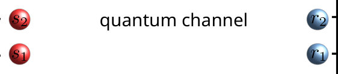
<figcaption class="paper-figure-caption"><b>Fig 1.</b> FIG. 1: Protocol for transferring quantum information from an n-qubit sender register (red spheres) to an n-qubit receiver register (blue spheres) through repeated use of the same quantum channel (green spheres). The ith transfer occurs at time ti.</figcaption>
</figure>
<figure class="paper-figure-card">
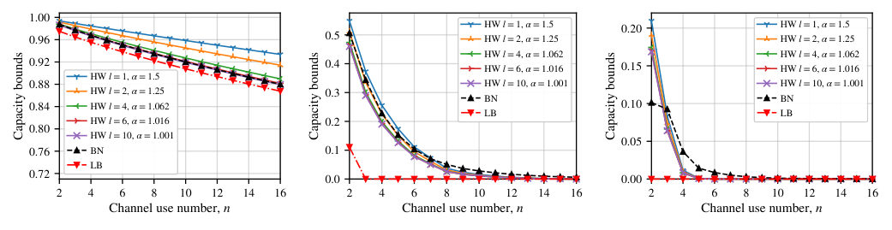
<figcaption class="paper-figure-caption"><b>Fig 2.</b> FIG. 2: Analytical lower bound LB(n), bottleneck bound BN(n), and Holevo–Werner upper bounds HW(n, l) as functions of the channel-use number n for chain length N = 10 at relative readout timing errors δ ∈{1%, 10%, 16%}.</figcaption>
</figure>
<figure class="paper-figure-card">
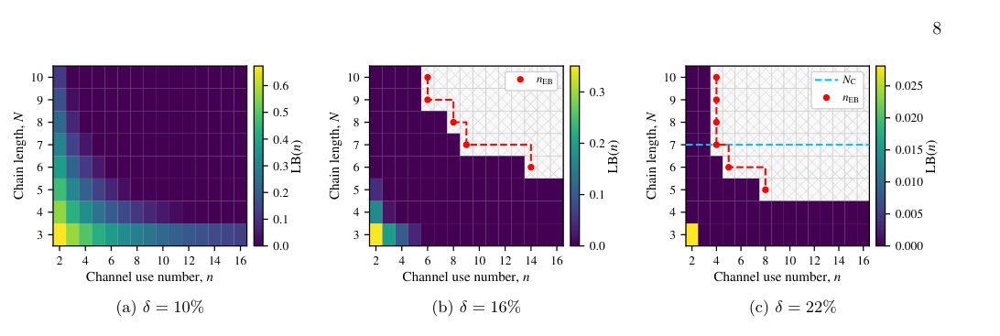
<figcaption class="paper-figure-caption"><b>Fig 3.</b> FIG. 3: Analytical lower bound LB(n) across channel use number n and chain length N for relative readout timing errors δ ∈{10%, 16%, 22%}. The red line indicates the entanglement-breaking threshold nEB (the hatched region corresponds to n ≥nEB), and the blue line marks the critical chain length NC, at or above which γ(N)(δ) ≥1/2.</figcaption>
</figure>
<figure class="paper-figure-card">
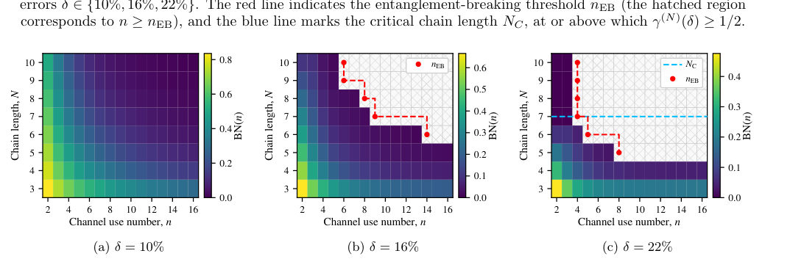
<figcaption class="paper-figure-caption"><b>Fig 4.</b> FIG. 4: Bottleneck upper bound BN(n) across channel-use number n and chain length N for relative readout timing errors δ ∈{10%, 16%, 22%}. The red staircase marks the entanglement-breaking boundary nEB(N, δ), with n ≥nEB hatched. The blue dashed line marks the critical chain length NC, at or above which γ(N)(δ) ≥1/2 and BN(n) = 0 for every n.</figcaption>
</figure>
<figure class="paper-figure-card">
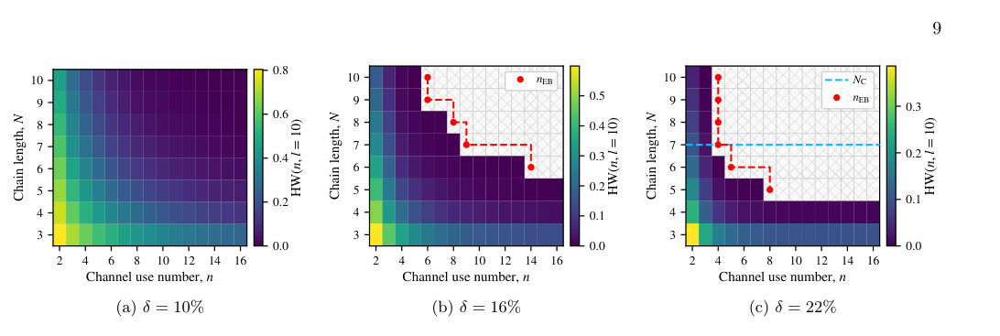
<figcaption class="paper-figure-caption"><b>Fig 5.</b> FIG. 5: Holevo–Werner SDP upper bound HW(n, l = 10) across channel-use number n and chain length N for relative readout timing errors δ ∈{10%, 16%, 22%}. The red staircase marks the entanglement-breaking boundary nEB(N, δ), while the blue dashed line marks the critical length NC, at or above which γ(N)(δ) ≥1/2. Hatched cells satisfy n ≥nEB and therefore belong to a zero-capacity region.</figcaption>
</figure>
</div>

<p><strong>Summary.</strong> This work analyzes how reusing a quantum channel without resetting it causes memory-induced degradation, suppressing entanglement transmission. By deriving tight lower and upper bounds on quantum capacity, the authors establish fundamental limits based on timing precision and chain length. These results provide a crucial benchmark for designing robust, scalable quantum communication networks.</p>
<p><strong>Why it may be interesting.</strong> It provides a rigorous, quantitative framework for understanding decoherence and resource limitations in scalable quantum network architectures, directly impacting the feasibility of quantum repeaters.</p>
<details>
<summary>Detailed structure</summary>
<p><strong>Main problem.</strong> The paper investigates the operational limits of distributing entanglement through quantum channels that are repeatedly used without being fully reinitialized.</p>
<p><strong>Main result.</strong> It establishes fundamental thresholds for entanglement distribution, notably a 36.41% relative timing-error threshold guaranteeing zero unassisted quantum capacity for any chain with internal memory.</p>
<p><strong>Method.</strong> The authors derive analytical lower bounds on quantum capacity and combine them with the Holevo-Werner semidefinite-programming upper bound to characterize the achievable rate.</p>
<p><strong>Model / system.</strong> The model involves quantum state transfer through a spin-1/2 chain of N sites, where the internal sites act as a memory source that accumulates residual excitations upon channel reuse.</p>
<p><strong>Key observables.</strong> Quantum capacity, residual excitations, relative timing error, and the quantum capacity window.</p>
<p><strong>Important parameters / regimes.</strong> Chain length (N), number of uses, and the relative timing error ($\delta$).</p>
<p><strong>Assumptions / limitations.</strong> The analysis contrasts the standard assumption of a fully reset (memoryless) channel with the case of channel reuse retaining internal memory.</p>
<p><strong>Figures summary.</strong> Not specified, but the notes reference Figure 1 illustrating the protocol for transferring quantum information via repeated use of the same channel.</p>
<p><strong>Paper structure.</strong> The paper develops an effective repeated-use channel description, derives multiple bounds (lower bound, Holevo-Werner upper bound), and analyzes the capacity window, culminating in the derivation of fundamental error thresholds.</p>
</details>
<details>
<summary>Abstract</summary>
<p>We investigate the operational limits of entanglement distribution through quantum channels reused without reinitialization. Building on an effective repeated-use channel description, we show that residual excitations left in the channel from previous uses act as a memory source that progressively suppresses coherent quantum transmission. To quantify this limitation, we derive an analytical lower bound on the quantum capacity and combine it with the Holevo-Werner semidefinite-programming upper bound. We also provide an analytical criterion to identify entanglement-breaking channels, with thresholds that depend jointly on chain length and reuse. For perfect-state-transfer chains, the resulting capacity window yields tighter estimates than previous bounds, with the relative improvement becoming substantially more pronounced closer to the entanglement-breaking threshold. Moreover, on the second use, our lower bound certifies a maximal relative timing-error tolerance across all chains with internal memory that lies just below 22.63% and is attained by the three-site chain. We further derive a fundamental relative timing-error threshold of 36.41%, above which we analytically guarantee zero unassisted quantum capacity for every chain with internal memory, independent of the number of uses. These results establish a clear benchmark model for repeated entanglement distribution, and identify timing precision, chain length, and memory accumulation as fundamental constraints on scalable quantum-network architectures.</p>
</details>
<p><sub><a href="#top">↑ back to top</a></sub></p>

<p><a id="paper-2610.38904"></a></p>
<h3 id="mitigating-errors-in-variational-quantum-eigensolver-calculations-through-extended-random-phase-approximation"><a href="http://arxiv.org/abs/2610.38904v1">Mitigating Errors in Variational Quantum Eigensolver Calculations through Extended Random Phase Approximation</a></h3>
<p><strong>Authors:</strong> Michael Wagner, Pavel Begy, Jiří Brabec, Alexandra Tucholská, Mikuláš Matoušek, Katarzyna Pernal, Libor Veis<br>
<strong>Type:</strong> both · <strong>Category:</strong> quantum information and computing · <strong>PDF:</strong> <a href="https://arxiv.org/pdf/2610.38904v1">https://arxiv.org/pdf/2610.38904v1</a><br>
<strong>Analysis basis:</strong> full PDF text, analyzed in chunks
<strong>Topic relevance:</strong> <code>quantum measurements</code> <strong>1/5</strong></p>
<div class="figure-strip-hint">↔ Scroll figures horizontally</div>
<div class="paper-figures-scroll">
<figure class="paper-figure-card">
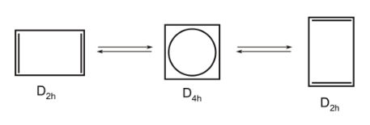
<figcaption class="paper-figure-caption"><b>Fig 1.</b> Figure 1: The automerization reaction of cy- clobutadiene, with the corresponding molecular point groups indicated.</figcaption>
</figure>
<figure class="paper-figure-card">
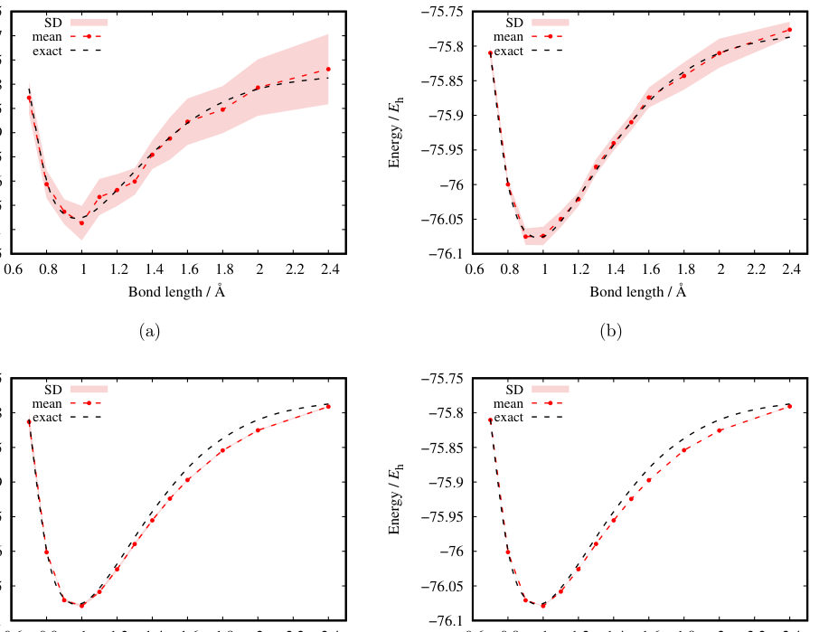
<figcaption class="paper-figure-caption"><b>Fig 2.</b> Figure 2: Potential energy curves for the symmetric stretching of H2O obtained from finite-shot evaluation of the optimized VQE state in the CAS(4,4) active space using Qiskit Aer. The 1- RDMs were taken to be exact, while the 2-RDMs were evaluated with finite-shot sampling. Red points and shaded regions represent the mean and ±1 standard deviation (SD), respectively, over 10 independent runs. The dashed black line denotes the CASSCF(4,4) reference. (a,b) Energies obtained with 1,000 and 10,000 shots, respectively; (c,d) corresponding ERPA-corrected energies.</figcaption>
</figure>
<figure class="paper-figure-card">
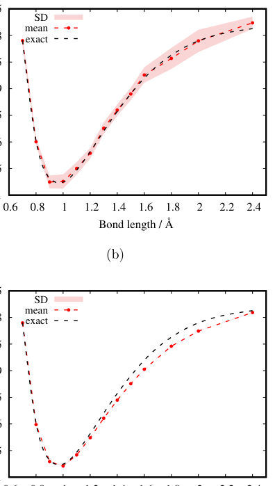
<figcaption class="paper-figure-caption"><b>Fig 3.</b> Figure 4 illustrates this behavior for a low-</figcaption>
</figure>
<figure class="paper-figure-card">
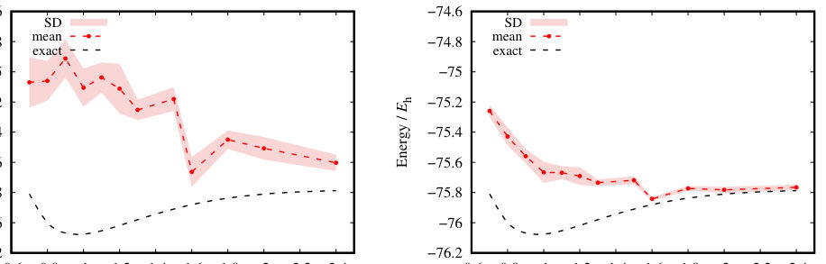
<figcaption class="paper-figure-caption"><b>Fig 4.</b> Figure 3: Potential energy curves for the symmetric stretching of H2O obtained from finite-shot evaluation of the optimized VQE state on the ibm_pittsburgh QPU using 1,000 shots. Red points and shaded regions represent the mean and ±1 standard deviation (SD), respectively, over 10 independent runs. The dashed black line denotes the CASSCF(4,4) reference. (a) QPU-evaluated energies; (b) corresponding ERPA-corrected energies.</figcaption>
</figure>
<figure class="paper-figure-card">
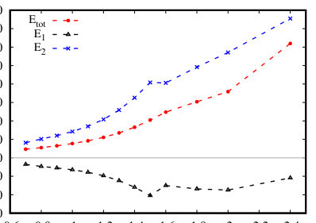
<figcaption class="paper-figure-caption"><b>Fig 5.</b> Figure 4: Energy errors for the sym- metric stretching of H2O, relative to the CASSCF(4,4) reference, obtained from a small- bond-dimension (M = 4) DMRG calcula- tion. The errors are decomposed into the one- electron (E1) and two-electron (E2) contribu- tions and their sum (Etot).</figcaption>
</figure>
</div>

<p><strong>Summary.</strong> This paper introduces the Extended Random Phase Approximation (ERPA) as a novel, measurement-efficient technique to mitigate noise in VQE calculations for molecular simulations. By reconstructing the 2-RDM from noisy measurements and incorporating a DMRG-derived 1-RDM, the authors achieve dramatic reductions in energy errors. The results validate this protocol's ability to yield accurate molecular potential energy curves on current quantum hardware.</p>
<p><strong>Why it may be interesting.</strong> It directly addresses the critical gap between theoretical quantum chemistry methods and the noisy reality of near-term quantum hardware, providing a concrete, resource-efficient error mitigation protocol.</p>
<details>
<summary>Detailed structure</summary>
<p><strong>Main problem.</strong> Accurately simulating molecular electronic structure using the Variational Quantum Eigensolver (VQE) is severely hampered by noise inherent in current quantum hardware.</p>
<p><strong>Main result.</strong> The proposed Extended Random Phase Approximation (ERPA) combined with a DMRG-derived 1-RDM significantly reduces energy errors by orders of magnitude on quantum hardware benchmarks.</p>
<p><strong>Method.</strong> The core methodology involves using ERPA to reconstruct the two-particle reduced density matrix (2-RDM) from noisy measurements, supplemented by a hybrid DMRG calculation to provide a noise-free approximation for the one-RDM.</p>
<p><strong>Model / system.</strong> The study focuses on molecular electronic structure calculations, using the electronic Hamiltonian in second quantization. Benchmarks include water double-bond stretching and cyclobutadiene automerization.</p>
<p><strong>Key observables.</strong> Ground state energy, potential energy curves, and the automerization barrier ($\Delta E$).</p>
<p><strong>Important parameters / regimes.</strong> The required input data are the one- and two-particle reduced density matrices (1-RDM and 2-RDM).</p>
<p><strong>Assumptions / limitations.</strong> ERPA is assumed to be a measurement-efficient error mitigation technique that requires only 1- and 2-RDMs, although it cannot correct errors in the input 1-RDM alone.</p>
<p><strong>Figures summary.</strong> Figure 9 compares potential energy curves for cyclobutadiene automerization from unmitigated vs. ERPA-mitigated QPU measurements; Table 1 compares the calculated automerization barrier against established quantum chemistry benchmarks.</p>
<p><strong>Paper structure.</strong> The paper establishes the problem (VQE noise), introduces ERPA as a measurement-efficient alternative to QSE, details the hybrid DMRG-ERPA scheme, and validates its performance using benchmark calculations on quantum hardware.</p>
</details>
<details>
<summary>Abstract</summary>
<p>Quantum hardware noise remains a major obstacle to accurate molecular simulations using the variational quantum eigensolver (VQE). We introduce a novel error-mitigation strategy based on the extended random phase approximation (ERPA), which reconstructs the two-particle reduced density matrix (2-RDM) from approximate transition density matrices, effectively filtering errors in quantum measurements. Unlike quantum subspace expansion, the approach requires only the one- and two-particle RDMs. Since ERPA preserves the input 1-RDM, we further propose a hybrid quantum-classical scheme employing an inexpensive density matrix renormalization group (DMRG) calculation to provide a noise-free approximation to this quantity. Benchmarks on water double-bond stretching and cyclobutadiene automerization, performed on IBM quantum hardware, demonstrate reductions in energy errors by orders of magnitude. Combined with multireference adiabatic connection (AC0) corrections, the approach additionally recovers dynamical correlation beyond the active space, yielding accurate molecular potential energy curves and reaction barriers. Our results establish ERPA as a promising, measurement-efficient route toward reliable quantum-classical electronic structure calculations.</p>
</details>
<p><sub><a href="#top">↑ back to top</a></sub></p>

<p><a id="paper-2610.40595"></a></p>
<h3 id="optimal-detuning-and-gate-time-for-strongly-driven-single-qubit-gates-beyond-the-rotating-wave-approximation"><a href="http://arxiv.org/abs/2610.40595v1">Optimal detuning and gate time for strongly driven single-qubit gates beyond the rotating-wave approximation</a></h3>
<p><strong>Authors:</strong> Alejandro D. Bendersky, Sergio S. Gomez, Rodolfo H. Romero<br>
<strong>Type:</strong> theory · <strong>Category:</strong> quantum information and computing · <strong>PDF:</strong> <a href="https://arxiv.org/pdf/2610.40595v1">https://arxiv.org/pdf/2610.40595v1</a><br>
<strong>Analysis basis:</strong> full PDF text, analyzed in chunks
<strong>Topic relevance:</strong> <code>Keldysh / 2PI / non-Gaussian methods</code> <strong>1/5</strong></p>
<div class="figure-strip-hint">↔ Scroll figures horizontally</div>
<div class="paper-figures-scroll">
<figure class="paper-figure-card">
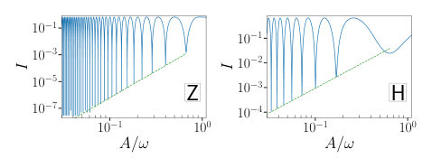
<figcaption class="paper-figure-caption"><b>Fig 1.</b> Fig. 1: Infidelity of Z and H gates as a function of the re- lation λ = A/ω from the numerically calculated evolution operator for the Hamiltonian HBS(t). The driving is taken in resonance with the energy gap (ω = ω0) and the opera- tion time is taken from the RWA prescription, tg = τZ, τH [eq. (2)]. The green dashed line are power-law fits at the minima of the dips: ∼(A/ω)4 for Z, and ∼(A/ω)2 for Hadamard gate.</figcaption>
</figure>
<figure class="paper-figure-card">
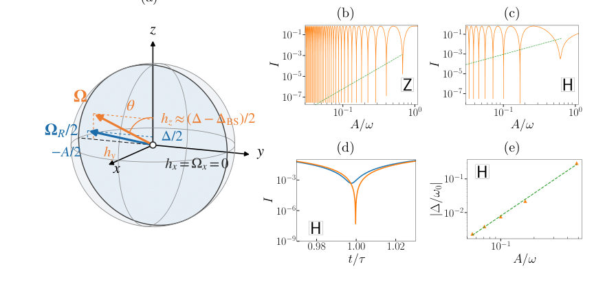
<figcaption class="paper-figure-caption"><b>Fig 2.</b> Fig. 2: (a) Equivalent magnetic fields acting on a spin 1/2, drawn on the Bloch sphere. Both Ωand ΩR lie in the (y, z) plane (shaded). Blue: field associated to the RWA, ΩR/2 = (0, −A/2, ∆/2). Orange: field of the Magnus-Taylor effective Hamiltonian, Ω= (0, hy, hz), eqs. (7); its component hz ≈(∆−∆BS)/2 tilts it by an angle θ with respect to the z axis, cos θ = hz/Ω. Dashed lines: components along y and z; the drawing corresponds to ∆&gt; 0 and ∆BS &lt; 0, with exaggerated angles. Infidelity of the (b) Z and (c) H gates as a function of A/ω, driving detuned by ∆BS with the corrected operation time, eqs. (13). Dashed lines: power-law followed by the dips of the RWA gates drawn for comparison. (d)...</figcaption>
</figure>
</div>

<p><strong>Summary.</strong> This theoretical paper improves the design of single-qubit quantum gates by correcting the limitations of the Rotating-Wave Approximation (RWA) under strong driving. Using the Magnus-Taylor expansion, the authors derive optimal detuning and time rescaling parameters. These corrections drastically lower gate infidelity, allowing for the reliable operation of gates at much higher driving amplitudes than previously thought possible.</p>
<p><strong>Why it may be interesting.</strong> This work provides concrete, quantitative methods for designing high-fidelity quantum gates in realistic, strongly driven physical systems, which is crucial for scaling up quantum computation.</p>
<details>
<summary>Detailed structure</summary>
<p><strong>Main problem.</strong> The paper addresses the inaccuracy of single-qubit quantum gates designed using the Rotating-Wave Approximation (RWA) when strong driving fields are employed.</p>
<p><strong>Main result.</strong> By applying corrections derived from the effective Magnus-Taylor Hamiltonian, the gate infidelity can be reduced by several orders of magnitude, significantly extending the usable range of driving amplitudes.</p>
<p><strong>Method.</strong> The authors use the Magnus-Taylor expansion up to second order in the inverse of the driving frequency to derive an effective, time-independent Hamiltonian that accounts for neglected counter-rotating terms.</p>
<p><strong>Model / system.</strong> The system is a two-level atom or qubit driven by a time-harmonic field, modeled by a Hamiltonian $H_{BS}(t) = \omega_0/2 \sigma_z + A \sin(\omega t)\sigma_x$.</p>
<p><strong>Key observables.</strong> Gate infidelity ($I$), fidelity ($F$), and the effective Hamiltonian parameters ($\Omega, 	heta, \phi$).</p>
<p><strong>Important parameters / regimes.</strong> The ratio $\lambda = A/\omega$ (amplitude to frequency) and the detuning $\Delta = \omega_0 - \omega$.</p>
<p><strong>Assumptions / limitations.</strong> The analysis relies on the perturbative Magnus-Taylor expansion up to second order in $1/\omega$, and the optimal conditions are found for stroboscopic gate measurements.</p>
<p><strong>Figures summary.</strong> Figures show the infidelity of Z and H gates versus the ratio $A/\omega$, demonstrating the power-law growth of error beyond RWA, and illustrate the optimal detuning and time corrections.</p>
<p><strong>Paper structure.</strong> The paper first establishes the failure of RWA at strong driving, then derives the effective Hamiltonian using the Magnus-Taylor expansion, and finally calculates the corrected gate parameters and resulting low-infidelity protocols for Z and H gates.</p>
</details>
<details>
<summary>Abstract</summary>
<p>Single-qubit quantum gates are implemented as the time-controlled unitary evolution of a two-level system under harmonic driving. The rotating-wave approximation (RWA) provides closed-form gate parameters for weak coupling. Larger amplitudes, desirable to speed up the dynamics, make the RWA-designed gates inaccurate because of the neglected counter-rotating term, which also shifts the resonance (Bloch-Siegert shift). Here we study theoretically the infidelity of gates beyond the RWA, using the effective Magnus-Taylor Hamiltonian through second order in the inverse of the driving frequency. By detuning the driving frequency by an amplitude-dependent shift of Bloch-Siegert type and rescaling the operation time, the RWA gate conditions are recovered with corrected parameters. Numerical solutions of the Schrodinger equation show that these corrections lower the gate infidelity by several orders of magnitude, extending the range of usable amplitudes</p>
</details>
<p><sub><a href="#top">↑ back to top</a></sub></p>

<p><a id="paper-2610.40623"></a></p>
<h3 id="optimal-diamond-distance-estimation-for-unitary-channels"><a href="http://arxiv.org/abs/2610.40623v1">Optimal Diamond Distance Estimation for Unitary Channels</a></h3>
<p><strong>Authors:</strong> Jinge Bao, Qisheng Wang<br>
<strong>Type:</strong> theory · <strong>Category:</strong> quantum information and computing · <strong>PDF:</strong> <a href="https://arxiv.org/pdf/2610.40623v1">https://arxiv.org/pdf/2610.40623v1</a><br>
<strong>Analysis basis:</strong> full PDF text, analyzed in chunks
<strong>Topic relevance:</strong> <code>quantum measurements</code> <strong>1/5</strong></p>
<div class="figure-strip-hint">↔ Scroll figures horizontally</div>
<div class="paper-figures-scroll">
<figure class="paper-figure-card">
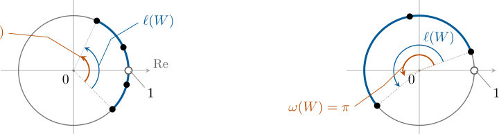
<figcaption class="paper-figure-caption"><b>Fig 1.</b> Figure 1: Panels (a) and (b) show the cases ℓ(W) &lt; π and ℓ(W) &gt; π. The blue angle is the length ℓ(W) of a shortest containing arc, and the orange angle is ω(W) = min{ℓ(W), π}.</figcaption>
</figure>
<figure class="paper-figure-card">
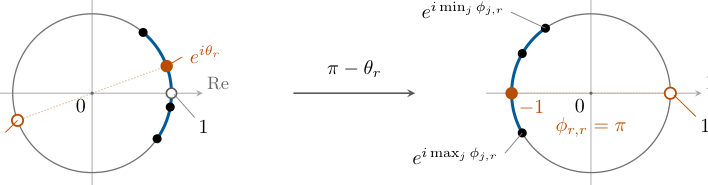
<figcaption class="paper-figure-caption"><b>Fig 2.</b> Figure 3: A shortest arc containing the spectrum of W, before (a) and after (b) rotation by π −θr, which sends the reference eigenvalue eiθr to −1 and its antipode to the phase cut at 1. Since the arc has length ℓ(W) &lt; π, after the rotation it avoids the phase cut, so the angles ϕj,r ∈[0, 2π) of the rotated eigenvalues satisfy maxj ϕj,r −minj ϕj,r = ℓ(W).</figcaption>
</figure>
<figure class="paper-figure-card">
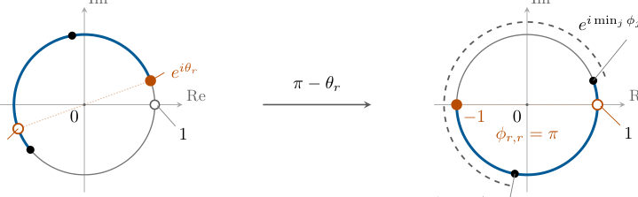
<figcaption class="paper-figure-caption"><b>Fig 3.</b> Figure 4: Rotation by π−θr when a shortest arc containing the spectrum of W has length ℓ(W) ≥π. After the rotation, this arc may contain the phase cut at 1. The phase interval corresponds to [minj ϕj,r, maxj ϕj,r] and has length at least ℓ(W). In this example the two lengths are ℓ(W) = 10π/9 and 4π/3, so both truncate to π.</figcaption>
</figure>
</div>

<p><strong>Summary.</strong> This paper presents a quantum algorithm to estimate the diamond distance between two unknown unitary quantum channels with optimal query complexity scaling as $O(\sqrt{d}/\epsilon)$. It achieves this by leveraging quantum phase estimation techniques to accurately determine the spectral width of the relative unitary channel. This result significantly improves upon previous methods for certifying unitary equality or bounding channel distinguishability.</p>
<p><strong>Why it may be interesting.</strong> This work is highly relevant to quantum information theory as it provides a significantly improved, near-optimal query complexity for a fundamental task: quantum process tomography/certification. The $\sqrt{d}$ scaling is a major algorithmic breakthrough compared to previous polynomial bounds.</p>
<details>
<summary>Detailed structure</summary>
<p><strong>Main problem.</strong> The paper addresses the problem of estimating the diamond distance between two unknown, high-dimensional unitary quantum channels, $U$ and $V$. This distance quantifies the optimal distinguishability between the two channels.</p>
<p><strong>Main result.</strong> The authors provide a quantum algorithm that estimates the diamond distance to within an additive error $\epsilon$ using a query complexity of $O(\sqrt{d}/\epsilon)$ queries to the unitary channels and their inverses.</p>
<p><strong>Method.</strong> The estimation is achieved by relating the diamond distance to the spectral width ($\omega(W)$) of the relative unitary $W = U^\dagger V$. The core method involves using quantum phase estimation techniques and a label-preserving verifier to estimate this spectral width with high precision.</p>
<p><strong>Model / system.</strong> The system involves $d$-dimensional quantum channels induced by unknown unitary operators $U$ and $V$ acting on quantum states. The analysis is purely theoretical, focusing on algorithmic query complexity.</p>
<p><strong>Key observables.</strong> The primary observable is the diamond distance, $\|U - V\|_{\diamond}$. Intermediate observables include the spectral width $\omega(W)$ of the relative unitary $W$, and the shifted relative eigenphases $\phi_{j,r}$.</p>
<p><strong>Important parameters / regimes.</strong> The key parameters are the dimension $d$, the desired accuracy $\epsilon$, and the query complexity scaling factor $\sqrt{d}/\epsilon$.</p>
<p><strong>Assumptions / limitations.</strong> The analysis relies on the success of quantum phase estimation algorithms and the existence of a label-preserving verifier that provides high acceptance probability when the phase estimate is accurate.</p>
<p><strong>Figures summary.</strong> Figure 1 illustrates the relationship between the spectral width $\ell(W)$ and the truncated spectral width $\omega(W)$. Figure 2 and Figure 3/4 provide geometric interpretations of the spectrum of $W$ on the unit circle and how phase representations are handled relative to a phase cut.</p>
<p><strong>Paper structure.</strong> The paper builds from defining the diamond distance and relating it to the spectral width $\omega(W)$. It then details the necessary quantum tools, such as quantum phase estimation and the label-preserving verifier, culminating in the main algorithm (Algorithm 1) that combines these tools to estimate the distance with optimal query complexity.</p>
</details>
<details>
<summary>Abstract</summary>
<p>The diamond distance between two quantum channels determines the optimal probability of distinguishing them from a single use. We give a quantum algorithm that estimates the diamond distance between two unknown $d$-dimensional unitary channels to within additive error $\varepsilon$, using $O(\sqrt{d}/\varepsilon)$ queries to the unitary channels and their inverses. The query complexity is optimal, as it matches the lower bound due to Jeon and Oh (npj Quantum Inf. 2026).</p>
</details>
<p><sub><a href="#top">↑ back to top</a></sub></p>

<p><a id="paper-2610.40358"></a></p>
<h3 id="quantum-communication-a-discrimination-approach"><a href="http://arxiv.org/abs/2610.40358v1">Quantum communication: a discrimination approach</a></h3>
<p><strong>Authors:</strong> Hao-Chung Cheng<br>
<strong>Type:</strong> theory · <strong>Category:</strong> quantum information and computing · <strong>PDF:</strong> <a href="https://arxiv.org/pdf/2610.40358v1">https://arxiv.org/pdf/2610.40358v1</a><br>
<strong>Analysis basis:</strong> full PDF text, analyzed in chunks
<strong>Topic relevance:</strong> <code>quantum measurements</code> <strong>1/5</strong></p>
<div class="figure-strip-hint">↔ Scroll figures horizontally</div>
<div class="paper-figures-scroll">
<figure class="paper-figure-card">
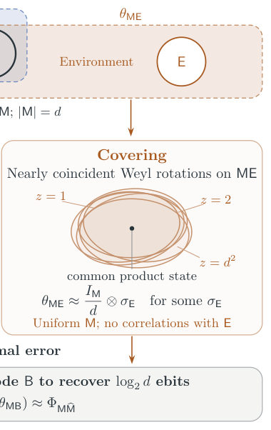
<figcaption class="paper-figure-caption"><b>Fig 1.</b> Figure 1. Operational duality for the pure channel output θMBE, with M common to the two marginals. The contours schematically represent Weyl-rotated states; Wz acts only on M. The packing contours may overlap, allowing nonzero discrimination error. On ME, all Weyl-rotations should remain close to the same product state IM/d ⊗σE for some environment state σE, and the recovery channel gives the same error, as in (2). The joint discrimination measurement is auxiliary; the communication decoder acts only on B.</figcaption>
</figure>
</div>

<p><strong>Summary.</strong> This paper introduces a state discrimination framework to analyze quantum communication over noisy channels. It leverages the duality between entanglement recovery and state discrimination to construct explicit coding bounds. The results provide precise, non-asymptotic estimates for the achievable error exponent, deepening the understanding of quantum channel capacity limits.</p>
<p><strong>Why it may be interesting.</strong> The connection between state discrimination and entanglement bounds provides a powerful, non-asymptotic tool for analyzing quantum channel capacity, which is fundamental to quantum information theory.</p>
<details>
<summary>Detailed structure</summary>
<p><strong>Main problem.</strong> The paper develops a state discrimination approach to analyze and establish achievable error bounds for unassisted quantum communication through a noisy quantum channel.</p>
<p><strong>Main result.</strong> It derives coding bounds showing that the error in entanglement generation decays exponentially at rates related to the Petz–Rényi coherent information, holding for any number of channel uses.</p>
<p><strong>Method.</strong> The methodology relies on establishing an operational duality between entanglement recovery and state discrimination, utilizing explicit decoders built from Petz recovery maps.</p>
<p><strong>Model / system.</strong> The system involves quantum communication over a noisy quantum channel ($N_{A 	o B}$), aiming to reliably transfer quantum states while preserving entanglement with a reference system.</p>
<p><strong>Key observables.</strong> Minimum average discrimination error ($P_{\star e}$), achievable error exponent ($\varepsilon_{EG}$), and Petz–Rényi coherent information ($I_\alpha$).</p>
<p><strong>Important parameters / regimes.</strong> The number of channel uses ($n$), the dimension ($d$), and the target Schmidt rank ($d_n$).</p>
<p><strong>Assumptions / limitations.</strong> The analysis is explicitly derived for product sources, although the framework is general.</p>
<p><strong>Figures summary.</strong> Figure 1 illustrates the operational duality, connecting the joint measurement (packing) perspective to the recovery channel (covering) perspective.</p>
<p><strong>Paper structure.</strong> The paper builds from establishing the operational duality between entanglement recovery and state discrimination, deriving coding bounds for one-shot entanglement generation using random coding, and finally presenting strengthened hypothesis-testing bounds.</p>
</details>
<details>
<summary>Abstract</summary>
<p>We develop a state discrimination approach to unassisted quantum communication through a noisy quantum channel. Starting from the operational duality between entanglement recovery and state discrimination, we construct entanglement-generation codes with explicit decoders constructed from Petz recovery maps. The resulting error bounds hold for every number of channel uses and are expressed in terms of Petz-Rényi coherent information. For product sources, they yield exponential error decay at rates below coherent information.</p>
</details>
<p><sub><a href="#top">↑ back to top</a></sub></p>

<p><a id="paper-2610.39702"></a></p>
<h3 id="quantum-query-complexity-of-tournament-solutions"><a href="http://arxiv.org/abs/2610.39702v1">Quantum Query Complexity of Tournament Solutions</a></h3>
<p><strong>Authors:</strong> Pragya Arora, Udit Kumar<br>
<strong>Type:</strong> theory · <strong>Category:</strong> quantum information and computing · <strong>PDF:</strong> <a href="https://arxiv.org/pdf/2610.39702v1">https://arxiv.org/pdf/2610.39702v1</a><br>
<strong>Analysis basis:</strong> full PDF text, analyzed in chunks
<strong>Topic relevance:</strong> <code>quantum measurements</code> <strong>1/5</strong></p>
<div class="figure-strip-hint">↔ Scroll figures horizontally</div>
<div class="paper-figures-scroll">
<figure class="paper-figure-card">
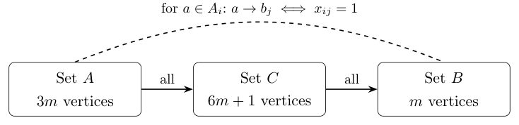
<figcaption class="paper-figure-caption"><b>Fig 1.</b> Figure 1: The three vertex sets of Tx. Solid arrows indicate that every vertex in one set dominates every vertex in the other set in the indicated direction. The dashed arrow represents the only input-dependent edges.</figcaption>
</figure>
<figure class="paper-figure-card">
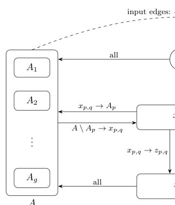
<figcaption class="paper-figure-caption"><b>Fig 2.</b> Figure 2: Construction of the tournament Ty</figcaption>
</figure>
</div>

<p><strong>Summary.</strong> This paper analyzes the quantum query complexity of finding various structural solutions within a tournament graph. It demonstrates quantum speedups for key problems, such as finding the top cycle in $  ilde{\Theta}(N)$ queries. The work rigorously establishes these bounds using advanced quantum complexity techniques like the adversary method.</p>
<p><strong>Why it may be interesting.</strong> While the subject matter is graph theory, the methodology—applying quantum query complexity theory to establish computational limits—is directly relevant to quantum information theory and quantum algorithms.</p>
<details>
<summary>Detailed structure</summary>
<p><strong>Main problem.</strong> The paper studies the quantum query complexity required to compute various structural properties, or 'tournament solutions,' within a tournament graph.</p>
<p><strong>Main result.</strong> It establishes significant quantum speedups for certain problems, showing the top cycle can be found in $  ilde{\Theta}(N)$ queries, and the Condorcet winner in $ ilde{O}(\sqrt{N})$ queries, compared to classical $\Theta(N^2)$ bounds for some measures.</p>
<p><strong>Method.</strong> The analysis relies heavily on quantum query complexity theory, employing techniques like Ambainis's adversary method for lower bounds and divide-and-conquer algorithms for upper bounds.</p>
<p><strong>Model / system.</strong> The model is a tournament, which is a directed graph where every pair of distinct vertices has exactly one directed edge between them. The computation is framed within the quantum query model, where learning the outcome of a single pairwise comparison costs one query.</p>
<p><strong>Key observables.</strong> The primary observables are the quantum query complexities $Q(\cdot)$ for specific tournament solutions, such as the top cycle ($    ext{TC}(T)$), Condorcet winner, and maximum out-degree vertex.</p>
<p><strong>Important parameters / regimes.</strong> The main parameter is $N$, the number of vertices (alternatives) in the tournament. Complexity bounds are given in terms of $N$ (e.g., $  ilde{\Theta}(N)$, $ ilde{O}(\sqrt{N})$).</p>
<p><strong>Assumptions / limitations.</strong> The analysis assumes access to the tournament structure via an oracle $O_T$ within the quantum query model. Lower bounds often rely on reductions to counting problems solved via Ambainis's method.</p>
<p><strong>Figures summary.</strong> Figure 2 illustrates the construction of a specific tournament $T_y$ used in the lower bound proof for the uncovered set, detailing how edges depend on an input parameter $y$.</p>
<p><strong>Paper structure.</strong> The paper systematically analyzes different tournament solutions (Copeland set, top cycle, Condorcet winner, etc.), deriving both upper bounds (algorithms) and lower bounds (using adversary methods) for their quantum query complexity.</p>
</details>
<details>
<summary>Abstract</summary>
<p>A tournament solution records a set of winners from a tournament, that is, from the outcomes of all pairwise comparisons among $N$ alternatives. We study the quantum query complexity of computing tournament solutions when the outcome of each comparison has to be learned by a query. Classically, the picture is uniform: the Copeland set, the uncovered set and the top cycle all require $Θ(N^2)$ queries, and so does finding a single vertex of maximum out-degree. We show that the quantum query complexity of the top cycle can be computed with $\tildeΘ(N)$ queries, and a Condorcet winner can be found with $\tilde Θ(\sqrt N)$ queries. Finding a strong king requires $Θ(N^{3/2})$ queries, the same as finding a vertex of maximum out-degree. We also give a self-contained alternative proof of the known $Θ(N^{3/2})$ bound for finding a vertex of maximum degree, established by Gilani, Mande, Patro, and Raja. Our lower bounds reduce counting problems to tournament problems using Ambainis's adversary method. For the top cycle, we find a Hamiltonian path and locate the prefix forming the top cycle by divide and conquer.</p>
</details>
<p><sub><a href="#top">↑ back to top</a></sub></p>

<p><a id="paper-2610.40417"></a></p>
<h3 id="seeding-and-amplification-of-chaos-in-long-range-interacting-spin-chains"><a href="http://arxiv.org/abs/2610.40417v1">Seeding and Amplification of Chaos in Long-Range Interacting Spin Chains</a></h3>
<p><strong>Authors:</strong> Sareen Sabra, Jeffrey G. Rau<br>
<strong>Type:</strong> theory · <strong>Category:</strong> statistical mechanics · <strong>PDF:</strong> <a href="https://arxiv.org/pdf/2610.40417v1">https://arxiv.org/pdf/2610.40417v1</a><br>
<strong>Analysis basis:</strong> full PDF text, analyzed in chunks
<strong>Topic relevance:</strong> <code>Frenkel-Kontorova</code> <strong>1/5</strong></p>
<div class="figure-strip-hint">↔ Scroll figures horizontally</div>
<div class="paper-figures-scroll">
<figure class="paper-figure-card">
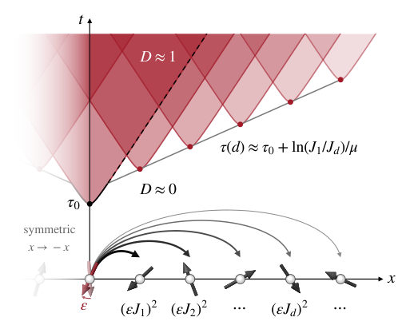
<figcaption class="paper-figure-caption"><b>Fig 1.</b> FIG. 1. Illustration of the seeding mechanism. The perturbation ϵ at the origin seeds weak perturbations at distant sites through the long-range couplings Jd. The decorrelator D depends quadratically on these seed perturbations, giving a factor (ϵJd)2. Each seed is subsequently amplified by the local chaotic dynamics, producing a translated nearest-neighbor cone with arrival time τ(d). The overlap- ping cones produce an extended region of substantial decorrelation (D ≈1), separated from the undecorrelated region (D ≈0) by the resulting long-range front.</figcaption>
</figure>
<figure class="paper-figure-card">
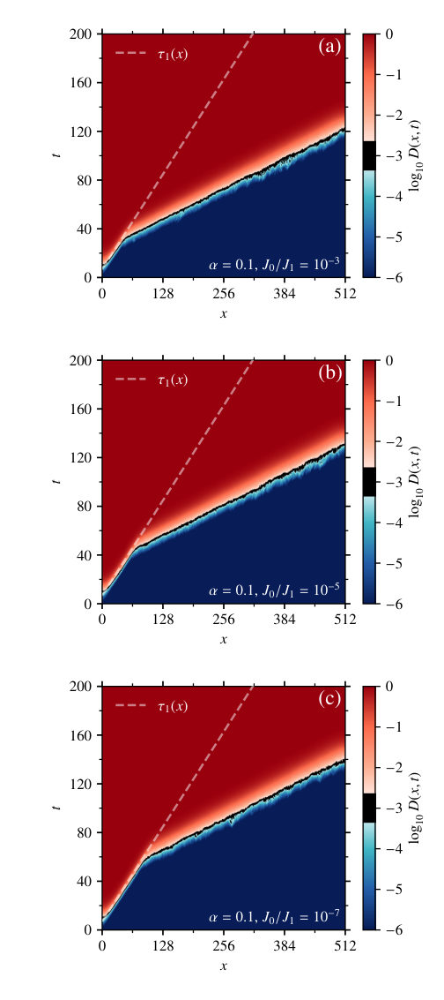
<figcaption class="paper-figure-caption"><b>Fig 2.</b> FIG. 2. Simulated decorrelators, D(x, t), for a perturbation of size ϵ = 10−3 in a spin chain of length N = 1024 subjected to an exponentially decaying Jd with α = 0.1 and (a) J0 = 10−3, (b) 10−5, and (c) 10−7. The emphasized region (outlined in black) indicates the boundary of correlation to decorrelation at D(x, t) = χ = 10−3, which defines the front of the propagation of chaos. At small times the front is identical to the nearest-neighbor light cone, but at a crossover time tc a linear tail emerges with a different slope. At fixed α, the crossover time shifts with the interaction amplitude J0.</figcaption>
</figure>
<figure class="paper-figure-card">
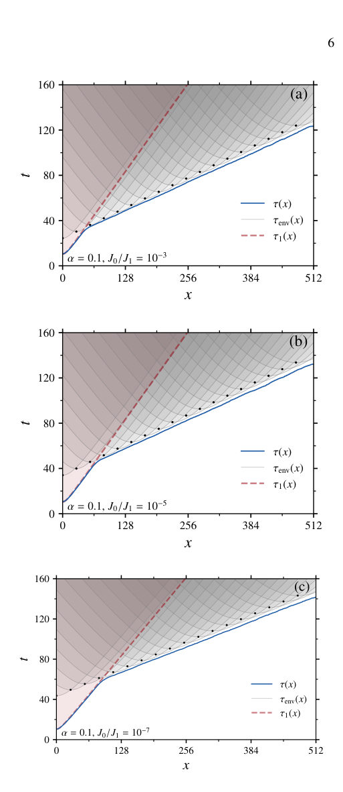
<figcaption class="paper-figure-caption"><b>Fig 3.</b> FIG. 3. Comparison of the seeded-cone approximation (Sec. III A) to the simulated data τ(x) for α = 0.1. The overlaid curves illus- trate the front produced by the superposition of the nearest-neighbor cones from the seeded perturbations, τenv(x). The points indicate the minimum of each separately seeded cone, i.e., the earliest threshold arrival associated with that cone, given by the arrival-time approxi- mation [Eq. (14)]. Both estimates agree well with the simulated re- sults, with the envelope providing the closer description of the front.</figcaption>
</figure>
<figure class="paper-figure-card">
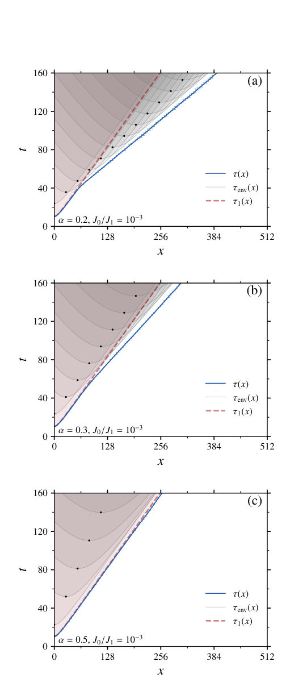
<figcaption class="paper-figure-caption"><b>Fig 4.</b> FIG. 4. Comparison between the seeded-cone approximation τenv(x) and the simulated results τ(x) for (a) α = 0.2, (b) α = 0.3, and (c) α = 0.5 at fixed J0 = 10−3. As α increases, the long-range front approaches the nearest-neighbor cone, while the seeded-cone enve- lope agrees more closely with the simulated data. At α = 0.5, the simulated front remains close to the nearest-neighbor front over the accessible distances, although this finite-window agreement does not by itself locate the crossover. The cone minima, indicated by the dots, no longer trace the simulated data, highlighting the decreasing effectiveness of the arrival-time approximation at larger α.</figcaption>
</figure>
<figure class="paper-figure-card">
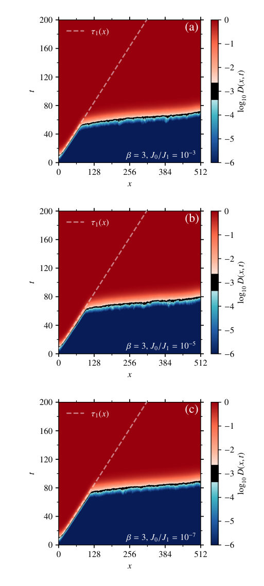
<figcaption class="paper-figure-caption"><b>Fig 5.</b> FIG. 5. Simulated decorrelators, D(x, t), for a perturbation of size ϵ = 10−3 in a spin chain of length N = 1024 subjected to a power- law decaying Jd with β = 3 and (a) J0 = 10−3, (b) 10−5, and (c) 10−7. The emphasized region (outlined in black) indicates the boundary of correlation to decorrelation at D(x, t) = χ = 10−3, which defines the front of the propagation of chaos. At small times the front is identical to the nearest-neighbor light cone τ1(x), but at a crossover time tc a logarithmic tail emerges. At fixed β, the crossover time shifts with the interaction amplitude J0.</figcaption>
</figure>
</div>

<p><strong>Summary.</strong> This paper analyzes the spread of chaos in long-range interacting spin chains by studying the decorrelator. It demonstrates that the spatial decay of weak, long-range couplings dictates the propagation law of the resulting disturbance. The findings offer a general 'seeding-and-amplification' picture applicable to various decay regimes, distinguishing between ballistic, nearest-neighbor, and exponentially expanding fronts.</p>
<p><strong>Why it may be interesting.</strong> The work provides a detailed theoretical framework for understanding how weak, non-local interactions can qualitatively alter the long-distance dynamics of a system, even if they do not change local observables.</p>
<details>
<summary>Detailed structure</summary>
<p><strong>Main problem.</strong> The paper investigates how weak, long-range interactions can seed and amplify small disturbances in a chaotic many-body system, contrasting the effects of different spatial decay laws for these interactions.</p>
<p><strong>Main result.</strong> The propagation of decorrelation depends critically on the interaction tail's decay: exponential tails can lead to ballistic fronts or recover nearest-neighbor dynamics, while power-law tails result in an exponentially expanding spatial front with logarithmic arrival time dependence.</p>
<p><strong>Method.</strong> The study uses the classical decorrelator, $D(x, t)$, to track the spread of chaos by numerically simulating the evolution of a perturbed spin chain governed by a Hamiltonian with nearest-neighbor and weak long-range couplings.</p>
<p><strong>Model / system.</strong> The system is an infinite-temperature classical Heisenberg spin chain described by a Hamiltonian containing a dominant nearest-neighbor exchange and a weak, decaying long-range interaction tail ($J_d$). The dynamics are governed by classical equations of motion.</p>
<p><strong>Key observables.</strong> The decorrelator, $D(x, t) = 1 - \langle S_x(t) \cdot S'_x(t) 
angle$, which quantifies the degree of decorrelation between two slightly perturbed copies of the system.</p>
<p><strong>Important parameters / regimes.</strong> The decay rate ($\alpha$) for exponential tails and the exponent ($eta$) for power-law tails, as well as the ratio of the long-range coupling strength to the nearest-neighbor coupling ($J_0/J_1$).</p>
<p><strong>Assumptions / limitations.</strong> The analysis is performed at infinite temperature, and the overall mechanism is interpreted via a 'seeding-and-amplification' picture where local dynamics govern the growth of disturbances seeded by long-range couplings.</p>
<p><strong>Figures summary.</strong> Figures illustrate the seeding mechanism, showing how initial perturbations propagate via nearest-neighbor cones, and compare the decorrelator evolution for different decay profiles ($\alpha$ vs. $eta$).</p>
<p><strong>Paper structure.</strong> The paper introduces the model and methods, develops the seeding-and-amplification picture, and then provides detailed comparisons of the resulting dynamics for exponentially decaying and power-law interacting tails.</p>
</details>
<details>
<summary>Abstract</summary>
<p>Truncating weak interactions is a natural simplification of a many-body Hamiltonian, but the validity of this approximation need not be uniform in distance and time. In a chaotic system, a weak long-range coupling can seed a small disturbance far from its source, after which the local dynamics can amplify that disturbance exponentially. We study this mechanism in an infinite-temperature classical Heisenberg spin chain with a dominant nearest-neighbor exchange and a weak interaction tail. Using a classical decorrelator, we compare exponentially and power-law decaying tails over several decades in interaction strength. For exponentially decaying interactions, the long-distance front remains ballistic when the tail is sufficiently shallow, with a velocity controlled by the competition between the spatial decay of the seed and the local chaotic growth. For sufficiently rapid exponential decay, the nearest-neighbor front, which is defined by an intrinsic butterfly velocity $v_b$, is recovered within the accessible space-time window. For power-law interactions, the arrival time is logarithmic in distance for all exponents studied, corresponding to an exponentially expanding spatial front; the power-law exponent controls the coefficient of this logarithm. We interpret both behaviors using a seeding-and-amplification picture in which long-range couplings generate weak disturbances throughout the chain whose growth is governed primarily by the local nearest-neighbor dynamics. In this picture, the overall strength of the tail primarily controls when the long-range front becomes visible, while its spatial decay controls the propagation law. Thus a weak interaction tail can leave conventional spin-dynamical observables essentially unchanged while qualitatively altering the long-distance propagation of decorrelation.</p>
</details>
<p><sub><a href="#top">↑ back to top</a></sub></p>

<p><a id="paper-2610.40093"></a></p>
<h3 id="static-response-of-the-strongly-coupled-electron-gas-from-diffusion-monte-carlo"><a href="http://arxiv.org/abs/2610.40093v1">Static Response of the Strongly Coupled Electron Gas from Diffusion Monte Carlo</a></h3>
<p><strong>Authors:</strong> Muhammed H. Güneş, Yubo Yang, Vitaly Gorelov, Miguel A. Morales, Matteo Gatti, Lucia Reining, Shiwei Zhang<br>
<strong>Type:</strong> theory · <strong>Category:</strong> strongly correlated electrons · <strong>PDF:</strong> <a href="https://arxiv.org/pdf/2610.40093v1">https://arxiv.org/pdf/2610.40093v1</a><br>
<strong>Analysis basis:</strong> full PDF text, analyzed in chunks
<strong>Topic relevance:</strong> <code>Keldysh / 2PI / non-Gaussian methods</code> <strong>1/5</strong></p>
<div class="figure-strip-hint">↔ Scroll figures horizontally</div>
<div class="paper-figures-scroll">
<figure class="paper-figure-card">
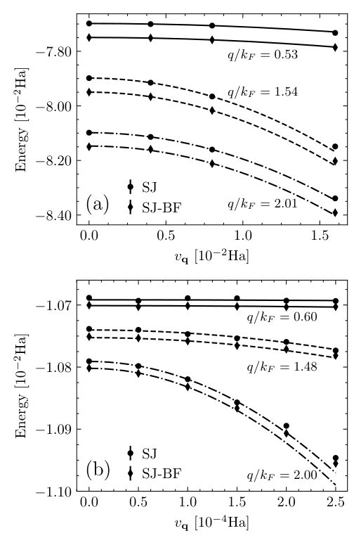
<figcaption class="paper-figure-caption"><b>Fig 1.</b> FIG. 1. Comparison of E(vq) obtained using DMC with and without backflow transformation for (a) rs = 5, Ne = 162, q/kF = 0.53 (solid), 1.54 (dashed), 2.01 (dash-dotted) and (b) rs = 70, Ne = 38, q/kF = 0.60 (solid), 1.48 (dashed), 2.00 (dash-dotted). For better visibility, the data at the second and third q are shifted downward by 0.002 and 0.004 Ha in (a), and by 5 × 10−5 and 10−4 Ha in (b). Lines represent a quadratic fit. Error bars are smaller than the symbols.</figcaption>
</figure>
<figure class="paper-figure-card">
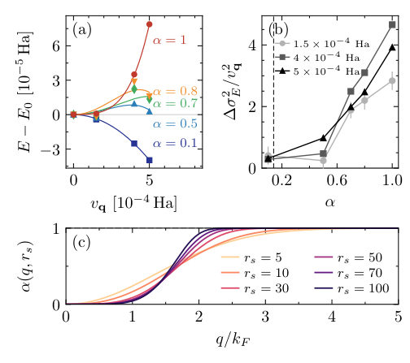
<figcaption class="paper-figure-caption"><b>Fig 2.</b> FIG. 2. (a) Energy per electron E(vq) relative to the ground state energy E0 as a function of the perturbation amplitude vq for trial wave functions with different α, at rs = 50, Ne = 54, and q = 1.20 kF . Solid curves are quartic fits. (b) Excess variance, ∆σ2 E = σ2 E(vq) −σ2 E(0), of the local energy per electron normalized by v2 q versus α for different amplitudes. Vertical dashed line indicates the optimal value of α given by Eq. (5). Error bars are reported on the symbols. (c) Optimized α as a function of q/kF for different values of rs.</figcaption>
</figure>
<figure class="paper-figure-card">
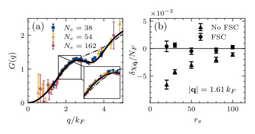
<figcaption class="paper-figure-caption"><b>Fig 3.</b> FIG. 3. (a) The local field factor G(q) at rs = 50 for different system sizes. The inset shows the zoomed-in view around q = 2kF . (b) The difference between two χ(q)-values that have the same |q| but different directions, i.e., χ  q = (2, 2, 1) 2π</figcaption>
</figure>
<figure class="paper-figure-card">
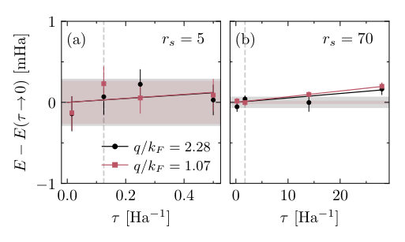
<figcaption class="paper-figure-caption"><b>Fig 4.</b> FIG. 5. Time-step bias E(τ) −E(τ →0) in the energy of the perturbed gas at Ne = 54, for two wave vectors. (a) rs = 5 perturbed with vq = 4 mHa, (b) rs = 70 perturbed with vq = 0.1 mHa. Red and black correspond to q/kF = 1.07 and q/kF = 2.28, respectively. Lines are weighted linear fits, and the shaded bands indicate the error bar of E(τ →0). The vertical dashed lines indicate the time step used in the production runs.</figcaption>
</figure>
<figure class="paper-figure-card">
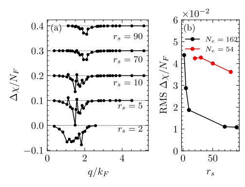
<figcaption class="paper-figure-caption"><b>Fig 5.</b> FIG. 4. Finite-size correction to the static response, ∆χ ≡ χ(q, ∞) −χ(q, N), obtained from Eq. (6) and given in units of NF . (a) ∆χ/NF as a function of q/kF for Ne = 162 at rs = 2–90; curves are offset vertically by 0.1, with dashed lines marking zero for each rs. (b) Root mean square of ∆χ/NF over all computed q points as a function of rs, for Ne = 162 (black) and Ne = 54 (red).</figcaption>
</figure>
</div>

<p><strong>Summary.</strong> This work presents state-of-the-art Diffusion Monte Carlo calculations to determine the static response function and local field factor of the electron gas across a vast density range ($2 \le r_s \le 100$). By refining the methodology, the authors extend reliable calculations significantly beyond previous metallic limits, revealing novel structural features in the response at lower densities.</p>
<p><strong>Why it may be interesting.</strong> While focused on the HEG, the rigorous application of advanced quantum Monte Carlo methods to calculate response functions provides a benchmark for many-body physics calculations relevant to strongly correlated quantum materials.</p>
<details>
<summary>Detailed structure</summary>
<p><strong>Main problem.</strong> The primary goal is to accurately determine the static response properties, specifically the local field factor G(q), of the strongly coupled electron gas for densities significantly beyond the previously studied metallic regime ($r_s > 10$).</p>
<p><strong>Main result.</strong> The authors successfully calculate $\chi(q)$ and $G(q)$ for $2 \le r_s \le 100$, showing that $G(q)$ develops a nonmonotonic structure at intermediate wave vectors at lower densities, which relates to short-range order.</p>
<p><strong>Method.</strong> The study employs Diffusion Monte Carlo (DMC) calculations on the perturbed energy $E(v_q)$ to extract the static density response function $\chi(q)$ and subsequently $G(q)$ via the Dyson equation.</p>
<p><strong>Model / system.</strong> The system modeled is the Homogeneous Electron Gas (HEG), characterized by the density parameter $r_s$. The calculations are performed using advanced DMC techniques, including optimizing variational parameters and applying finite-size corrections.</p>
<p><strong>Key observables.</strong> Static density-density response function $\chi(q)$ and the local field factor $G(q)$.</p>
<p><strong>Important parameters / regimes.</strong> The density parameter $r_s$ (ranging from 2 to 100) and the wave vector $q$ relative to the Fermi wave vector $k_F$.</p>
<p><strong>Assumptions / limitations.</strong> The methodology relies on the assumption that the linear-response regime can be identified using criteria like Signal-to-Noise Ratio (SNR) and $\chi^2_
u$, and that scaling laws derived from noninteracting systems can guide the calculation across different densities.</p>
<p><strong>Figures summary.</strong> Figures illustrate the dependence of the perturbed energy $E(v_q)$ on the perturbation amplitude $v_q$ for various densities, showing the optimal variational parameter $\alpha$ dependence on $q/k_F$, and visualizing the finite-size correction $\Delta\chi$ across different system sizes.</p>
<p><strong>Paper structure.</strong> The paper details the methodology for calculating $\chi(q)$ and $G(q)$ using DMC, emphasizing the optimization of the perturbing potential and the treatment of finite-size effects. It then presents the results across a wide density range, comparing findings with previous literature and relating the structure to pair correlation functions.</p>
</details>
<details>
<summary>Abstract</summary>
<p>The local field factor $G(q)$ of the HEG describes how exchange and correlation modify the response to a static perturbation, and enters dielectric screening, effective electron--electron interactions, and the xc kernel of TDDFT. Accurate zero-temperature data for $G(q)$, however, remain limited to metallic densities, $r_s\leq10$. In this work, we present diffusion Monte Carlo calculations of the static density response function $χ(q)$ and of $G(q)$ for $2\leq r_s\leq100$, and describe and discuss the methodological steps that enabled these calculations. We show how optimization of the perturbing potential in the trial wave function has an important effect, as a poor choice can reverse the sign of the response. A closed-form expression is provided for its optimal value, together with the density dependence of the linear-response window. We further show that backflow correlations leave $χ(q)$ unchanged and that $G(q)$ depends only weakly on system size even at very low density, so that Slater--Jastrow wave functions and modest system sizes suffice. Together, these results provide a practical guide for future QMC calculations of response properties of the electron gas and real materials. Our results agree with previous DMC data at metallic densities for $q>k_F$, and extend them below $k_F$. They also agree with diagrammatic QMC at $r_s=2$. At lower densities, our results show that $G(q)$ develops a nonmonotonic structure at intermediate-$q$, where the response approaches that of the noninteracting gas. Quantitative agreement is seen with finite-temperature path integral Monte Carlo, suggesting that the previously reported finite-temperature structure is inherited from the ground state. Using a parametrization of $G(q)$ that reproduces our data throughout the liquid phase, we relate this structure to short-range order in the pair correlation function and the static structure factor.</p>
</details>
<p><sub><a href="#top">↑ back to top</a></sub></p>

<p><a id="paper-2610.40357"></a></p>
<h3 id="subsystem-spacetime-code"><a href="http://arxiv.org/abs/2610.40357v1">Subsystem Spacetime Code</a></h3>
<p><strong>Authors:</strong> Esther Xiaozhen Fu, Aranya Chakraborty, Daniel Gottesman<br>
<strong>Type:</strong> theory · <strong>Category:</strong> quantum information and computing · <strong>PDF:</strong> <a href="https://arxiv.org/pdf/2610.40357v1">https://arxiv.org/pdf/2610.40357v1</a><br>
<strong>Analysis basis:</strong> full PDF text, analyzed in chunks
<strong>Topic relevance:</strong> <code>quantum measurements</code> <strong>1/5</strong></p>
<div class="figure-strip-hint">↔ Scroll figures horizontally</div>
<div class="paper-figures-scroll">
<figure class="paper-figure-card">
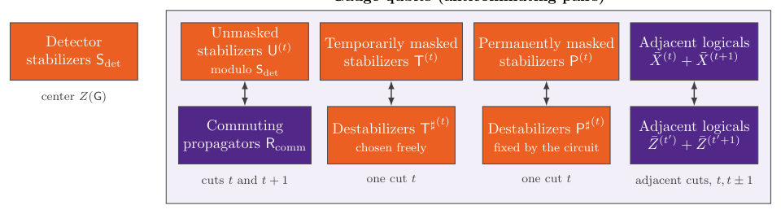
<figcaption class="paper-figure-caption"><b>Fig 1.</b> Figure 1: Key ingredients of the subsystem spacetime code. The detector stabilizers Sdet form the center of G and are its stabilizers. Every other generator belongs to a gauge qubit: a pair of operators that anticommute with each other and commute with every other pair. Unmasked stabilizers, taken modulo Sdet, pair with commuting propagators across adjacent cuts; temporarily and permanently masked stabilizers pair with their destabilizers at the same cut; and adjacent logical generators pair with each other. The diagram shows a basis for each type of elements, but the exact gauge qubits, i.e. stabilizer-destabilizer pairs, need to be calculated from here. In our construction the elements in...</figcaption>
</figure>
<figure class="paper-figure-card">
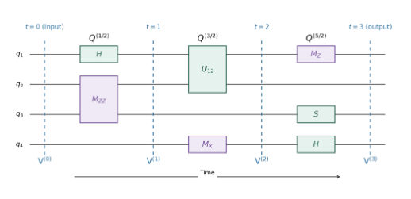
<figcaption class="paper-figure-caption"><b>Fig 2.</b> Figure 2: The circuit model considered in this paper. We consider imaginary time slices through the circuit that separates successive operations. Each intermediate circuit block consists of unitary operations and measurements having disjoint supports.</figcaption>
</figure>
<figure class="paper-figure-card">
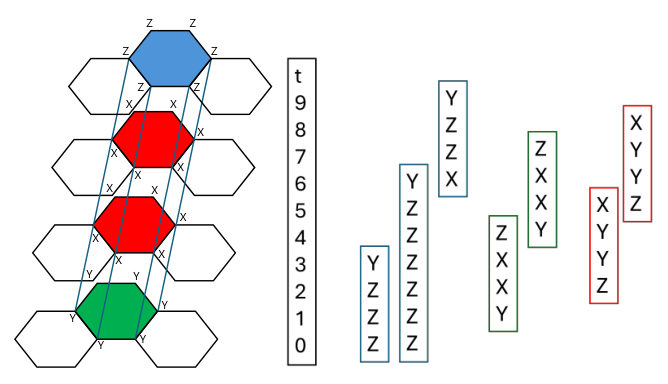
<figcaption class="paper-figure-caption"><b>Fig 3.</b> Figure 3: Spacetime code structure for the Hastings and Haah’s Floquet code. (Left) A stabilizer in the spacetime code with weight 24. (Right) Each entry X, Y, Z denotes a weight-6 Pauli on a hexagon of the same Pauli type in the honeycomb lattice. Operators on the same column are supported by the same hexagon but at different timeslices.</figcaption>
</figure>
<figure class="paper-figure-card">
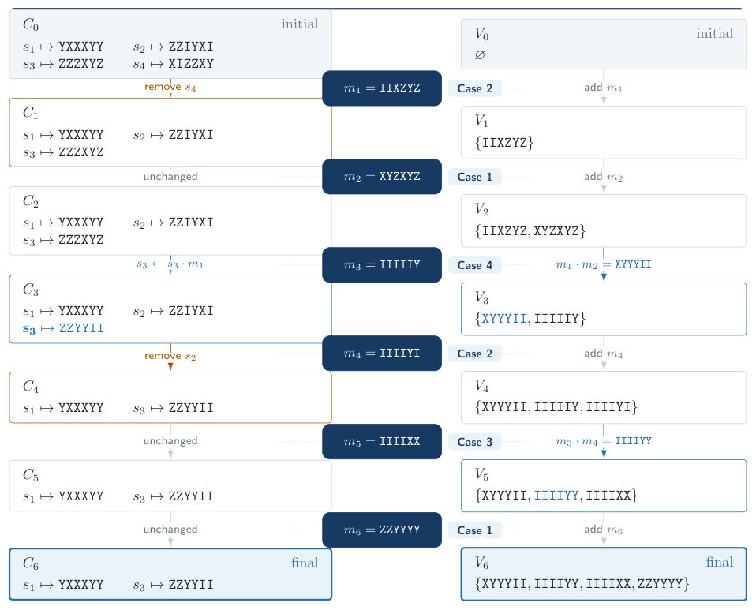
<figcaption class="paper-figure-caption"><b>Fig 4.</b> Figure 4: Evolution of the distance-algorithm data. The left and right tracks show the states of Cj and Vj, respectively, after each measurement. The central nodes identify the measurement and the corresponding update rule.</figcaption>
</figure>
<figure class="paper-figure-card">
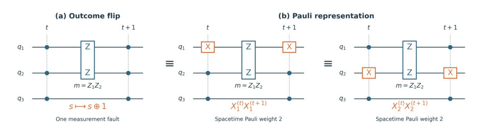
<figcaption class="paper-figure-caption"><b>Fig 5.</b> Figure 5: Representing a measurement error on adjacent cuts. (a) The reported outcome of mea- suring m = Z1Z2 is flipped. (b) Two equivalent representations are X(t) 1 X(t+1) 1 and X(t) 2 X(t+1) 2 : the Pauli before the measurement flips its outcome, while the Pauli afterward cancels the residual data error. Thus, a single measurement fault admits non-unique representations of spacetime Pauli weight two.</figcaption>
</figure>
</div>

<p><strong>Summary.</strong> This paper introduces the subsystem spacetime code to analyze fault tolerance in complex quantum circuits. It constructs the code's gauge group by analyzing how stabilizer information is masked and propagated through time. The resulting framework successfully equates the code's distance to the circuit's true fault distance, offering a powerful diagnostic tool for designing robust quantum computation protocols.</p>
<p><strong>Why it may be interesting.</strong> While focused on abstract QEC theory, the development of dynamical codes and spacetime structures provides powerful mathematical tools for analyzing error propagation in time-dependent quantum systems, which has parallels in open quantum systems dynamics.</p>
<details>
<summary>Detailed structure</summary>
<p><strong>Main problem.</strong> The paper aims to develop an algebraic framework to characterize the fault distance of fault-tolerant quantum circuits, particularly those involving complex dynamical processes where static code approaches fail.</p>
<p><strong>Main result.</strong> The authors construct the subsystem spacetime code, proving that its gauge group structure explicitly characterizes the circuit's fault distance, providing a versatile tool for designing fault-tolerant circuits.</p>
<p><strong>Method.</strong> The methodology involves constructing the subsystem spacetime code and characterizing its gauge group using the masking properties of instantaneous stabilizer groups within a spacetime Pauli space formalism.</p>
<p><strong>Model / system.</strong> The model is quantum computation circuits involving Clifford gates and Pauli measurements, analyzed using a 'dynamical code' approach that tracks the evolution of the stabilizer group over imaginary time slices.</p>
<p><strong>Key observables.</strong> Fault Distance, Gauge Group structure, Unmasked Distance ($d_U$), Measurement Error Distance ($d_{	ext{meas}}$), and the center of the gauge group.</p>
<p><strong>Important parameters / regimes.</strong> The circuit composition structure, the type of fault model (e.g., measurement errors), and the specific Pauli operators defining the stabilizers.</p>
<p><strong>Assumptions / limitations.</strong> The framework builds upon prior work and assumes the circuit blocks are ideal; relating spacetime distance to unmasked distance requires a 'correctability condition'.</p>
<p><strong>Figures summary.</strong> Figure 1 illustrates the key components of the subsystem spacetime code, detailing the basis for generators derived from detector stabilizers, gauge qubits, and commuting propagators.</p>
<p><strong>Paper structure.</strong> The paper proceeds by reviewing background theory, introducing masking properties and spacetime Paulis, specifying applicable circuits, constructing the gauge group and distance, relating distance to unmasked distances, and finally applying the framework to dynamical codes and circuit composition.</p>
</details>
<details>
<summary>Abstract</summary>
<p>Quantum error-correcting codes provide a powerful framework for analyzing and designing fault-tolerant Clifford circuits. In this work, we construct the subsystem spacetime code and use it to characterize the distances of Clifford circuits. We show that its gauge group can be explicitly constructed and classified using the masking properties of the instantaneous stabilizer groups and consists precisely of faults that are harmless to the circuit. We use this framework to identify where a dynamical code loses distance and to analyze how the fault distance changes when circuits are composed from smaller components. Our results provide a versatile tool for analyzing and designing fault-tolerant circuits, with potential applications to the construction of new dynamical codes.</p>
</details>
<p><sub><a href="#top">↑ back to top</a></sub></p>

<p><a id="paper-2610.39307"></a></p>
<h3 id="ten-loop-fixed-dimension-renormalization-group-functions-of-the-three-dimensional-on-model-from-distributed-gpu-accelerated-parametric-integration"><a href="http://arxiv.org/abs/2610.39307v1">Ten-loop fixed-dimension renormalization-group functions of the three-dimensional O(N) model from distributed GPU-accelerated parametric integration</a></h3>
<p><strong>Authors:</strong> Paolo Ribeca<br>
<strong>Type:</strong> theory · <strong>Category:</strong> statistical mechanics · <strong>PDF:</strong> <a href="https://arxiv.org/pdf/2610.39307v1">https://arxiv.org/pdf/2610.39307v1</a><br>
<strong>Analysis basis:</strong> full PDF text, analyzed in chunks
<strong>Topic relevance:</strong> <code>analog quantum simulation</code> <strong>1/5</strong></p>
<div class="figure-strip-hint">↔ Scroll figures horizontally</div>
<div class="paper-figures-scroll">
<figure class="paper-figure-card">
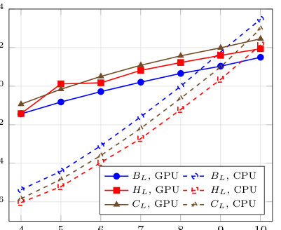
<figcaption class="paper-figure-caption"><b>Fig 1.</b> FIG. 1. The two costs of an order: the CPU time of the class build (dashed; the sum over the classes of the single-thread build times recorded in the ledger, in hours of one core of an Intel Xeon Platinum 8568Y+) and the GPU time of the sampling to a relative uncertainty of 10−5 (solid; the measured Tdev(10−5) of Table V, in hours of one NVIDIA H200 GPU, which scales as the inverse square of the target uncertainty). From seven loops on the sampling grows by a factor of 2.4– 2.9 per loop, the build by 32 to 100, since the sector table of a class spans the 2ℓsubsets of its lines and the minimum over its terms grows with them. For HL and CL the sampling dominates through nine loops and the...</figcaption>
</figure>
<figure class="paper-figure-card">
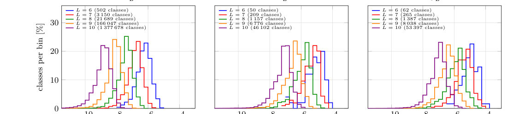
<figcaption class="paper-figure-caption"><b>Fig 2.</b> FIG. 2. Distribution over the classes of an order of the Neyman cost weight κG = |aG|σG√τG/|XL|, where aGσG is the standard deviation per sample of the weighted contribution of class G, τG its device time per sample and XL the order sum: the device time that brings XL to the relative uncertainty ϵ is T(ϵ) = (P</figcaption>
</figure>
</div>

<p><strong>Summary.</strong> This paper calculates the renormalization-group functions for the 3D O(N) model up to ten loops using advanced, distributed GPU-accelerated Monte Carlo techniques. By achieving unprecedented precision in these perturbative coefficients, the authors provide highly accurate predictions for critical exponents. This work significantly advances the theoretical understanding of critical phenomena in statistical field theories.</p>
<p><strong>Why it may be interesting.</strong> While focused on classical statistical mechanics, the rigorous, high-precision calculation of critical exponents and RG flow equations provides a benchmark for theoretical methods applicable to quantum critical points in many-body systems.</p>
<details>
<summary>Detailed structure</summary>
<p><strong>Main problem.</strong> The paper aims to extend the calculation of renormalization-group (RG) functions ($eta$, $\eta$, and $
u$) for the three-dimensional O(N) model to very high orders (up to tenth order for $eta$).</p>
<p><strong>Main result.</strong> The authors provide highly precise, high-order coefficients for the RG functions, comparing the resummed series results against those from the conformal bootstrap.</p>
<p><strong>Method.</strong> The calculation uses the Callan-Symanzik equation, deriving coefficients from parametric integrals sampled on GPUs via tropical Monte Carlo, and comparing results across multiple independent computational routes.</p>
<p><strong>Model / system.</strong> The study focuses on the three-dimensional O(N) model, analyzed in the fixed-dimension, massive zero-momentum scheme, which is a critical system in statistical mechanics.</p>
<p><strong>Key observables.</strong> The RG functions $eta$, $\eta$, and $
u$, and the critical exponents derived from them.</p>
<p><strong>Important parameters / regimes.</strong> The dimensionality $d=3$, the number of components $N$, and the coupling constant $u$.</p>
<p><strong>Assumptions / limitations.</strong> The primary assumption is the validity of the perturbative expansion and the ability to compute high-order loop integrals, though the authors note the computational cost of constructing integrands grows factorially.</p>
<p><strong>Figures summary.</strong> No specific figures are described, but the notes mention Table I summarizing the highest known orders for perturbative RG functions.</p>
<p><strong>Paper structure.</strong> The paper details the extension of known calculations, outlines the computational methodology (GPU acceleration, tropical Monte Carlo), presents the derived coefficients, and compares the final resummed results against established non-perturbative benchmarks like the conformal bootstrap.</p>
</details>
<details>
<summary>Abstract</summary>
<p>The renormalization-group functions $β$, $η$ and $ν$ of the three-dimensional $O(N)$ model in fixed dimension (massive zero-momentum scheme) were known to eighth order in the coupling. We extend them to tenth order, and $β$ to eleventh, for general $N$, which requires the two- and four-point functions to ten loops (1,593,254 graphs at the last order), and re-evaluate all lower orders. Through the Callan-Symanzik equation every coefficient follows from per-order sums that are linear in finite, zero-momentum $\bar R$-subtracted parametric integrals, one per graph, which we sample on GPUs by tropical Monte Carlo with densities adapted to the forest terms. The computation reproduces the known sums from two to seven loops within three standard deviations and agrees at ninth and tenth order, at lower precision, with an independent route through an intermediate scheme. The new coefficients have relative uncertainties of a few $10^{-5}$ or better, and the eighth-order coefficients of $η$ and $ν$ improve by factors of 120 and 4. The time needed to integrate an order to fixed relative precision grows by only 2.4-2.9 per loop from seven loops on, while the construction of the integrands still grows factorially and, at tenth order, costs more than the integration. Resummed, the tenth-order series give $ν=0.62997(51)$, $η=0.0333(18)$ and $ω=0.803(14)$ for $N=1$, against $0.62997097(12)$, $0.036297612(48)$ and $0.82968(23)$ from the conformal bootstrap; at $N=3$ the deviations grow, so that the uncertainty is now dominated by the resummation rather than by the coefficients. Every result is generated automatically from, or checked against, a public ledger of independent, exactly pooled runs, hosted on GitHub, to which anyone is welcome to contribute computing time.</p>
</details>
<p><sub><a href="#top">↑ back to top</a></sub></p>

<p><a id="paper-2610.38702"></a></p>
<h3 id="the-effective-field-theory-origin-of-the-fuzzy-sphere-method"><a href="http://arxiv.org/abs/2610.38702v1">The Effective Field Theory Origin of the Fuzzy Sphere Method</a></h3>
<p><strong>Authors:</strong> Mykola Dedushenko<br>
<strong>Type:</strong> theory · <strong>Category:</strong> statistical mechanics · <strong>PDF:</strong> <a href="https://arxiv.org/pdf/2610.38702v1">https://arxiv.org/pdf/2610.38702v1</a><br>
<strong>Analysis basis:</strong> full PDF text, analyzed in chunks
<strong>Topic relevance:</strong> <code>Keldysh / 2PI / non-Gaussian methods</code> <strong>1/5</strong></p>
<div class="figure-strip-hint">↔ Scroll figures horizontally</div>
<div class="paper-figures-scroll">
<figure class="paper-figure-card">
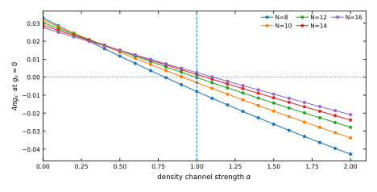
<figcaption class="paper-figure-caption"><b>Fig 1.</b> FIG. 1. The leading irrelevant coupling gε′ at gε = 0 criticality as a function of α. The plots are closer to zero at α = 1.</figcaption>
</figure>
<figure class="paper-figure-card">
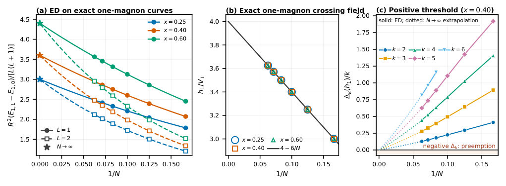
<figcaption class="paper-figure-caption"><b>Fig 2.</b> FIG. 2. The z = 2 easy-plane saturation transition. We write x = V1/(V0 + V1) and fix units such that V0 + V1 = 1. (a) Exact diagonalization (ED) markers for the L = 1, 2 one-magnon energies lie on the exact finite-N curves (not fits). Stars at 1/N = 0 mark the common limit R2(E1,L −E1,0)/[L(L + 1)] = 2 + 4x derived in [60]. (b) The exact one-magnon crossing field h1/V1 = 4 −6/N and three coincident data sets displayed with nested open markers. (c) At x = 0.40, the finite-volume multimagnon gap per magnon ∆k(h1)/k is positive through k = 6; a negative value would signal a bound state gap closing first (multiparticle preemption). Dotted tails are extrapolations to the common zero at 1/N = 0...</figcaption>
</figure>
<figure class="paper-figure-card">
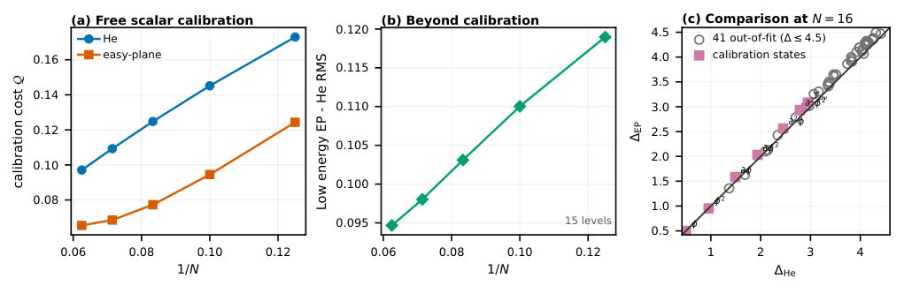
<figcaption class="paper-figure-caption"><b>Fig 3.</b> FIG. 3. Pseudo-Goldstone comparison between easy-plane (26) and He’s model [15]. (a) Free scalar calibration cost using seven lowest states versus 1/N for He’s published parameters and for the independently optimized easy-plane model. (b) RMS easy-plane–He difference for the lowest 15 symmetry-matched levels not used in the calibration; the difference steadily decreases with 1/N →0. (c) Level by level comparison at the largest size; filled squares denote 7 calibration states and open circles denote 41 lowest noncalibration states. See Supplemental Material [60] for the details behind these analyses.</figcaption>
</figure>
</div>

<p><strong>Summary.</strong> This paper introduces a 'mother theory' framework to systematically derive fuzzy sphere Hamiltonians for quantum field theories. By analyzing the Ising and easy-plane models, the authors demonstrate how integrating out fields yields both local effective theories and finite matrix quantum mechanics models. The work successfully predicts and analyzes a $z=2$ critical point, providing a rigorous theoretical tool for studying quantum criticality on curved spaces.</p>
<p><strong>Why it may be interesting.</strong> The systematic connection between continuum QFTs (via the mother theory) and finite matrix models (fuzzy sphere) provides a powerful tool for studying critical phenomena in condensed matter systems.</p>
<details>
<summary>Detailed structure</summary>
<p><strong>Main problem.</strong> To establish a systematic field-theoretic framework for the 'fuzzy sphere method' and analyze the critical behavior of resulting quantum models.</p>
<p><strong>Main result.</strong> The framework successfully reproduces known critical points (like the 3D Ising CFT) and provides a novel example exhibiting $z=2$ critical scaling via an easy-plane ferromagnet descendant.</p>
<p><strong>Method.</strong> The authors develop a 'mother theory' approach, defining the fuzzy Hamiltonian by integrating out fermionic and scalar fields from a local continuum theory on $S^2 	imes \mathbb{R}$.</p>
<p><strong>Model / system.</strong> The study focuses on fuzzy sphere Hamiltonians for (2+1)D CFTs, exemplified by the Ising mother theory and a complex scalar 'easy-plane' mother theory. These models are realized as matrix quantum mechanics approximations of QFTs.</p>
<p><strong>Key observables.</strong> Critical exponents (e.g., $z=2$), energy gaps ($\delta_k(N)$), and the dynamical exponent $z$.</p>
<p><strong>Important parameters / regimes.</strong> The magnetic flux, coupling constants ($g, h_z$), and the system size parameter $N$ (related to the sphere size).</p>
<p><strong>Assumptions / limitations.</strong> The method relies on scale separation between different field components and uses derivative expansion approximations to derive the effective Hamiltonians.</p>
<p><strong>Figures summary.</strong> Figures show numerical evidence for the model, illustrating the suppression of irrelevant couplings near criticality and the convergence of energy gaps to zero in the thermodynamic limit.</p>
<p><strong>Paper structure.</strong> The paper first introduces the general mother theory framework using the Ising model as an example, then develops the analysis using the complex scalar 'easy-plane' model, culminating in an exact solution for the one-magnon gap and the proof of $z=2$ scaling.</p>
</details>
<details>
<summary>Abstract</summary>
<p>Fuzzy sphere Hamiltonians for (2+1)D conformal field theories are usually written directly on the lowest Landau level. We introduce a framework organizing them as descendants of local ``mother theories'' on $S^2\times\mathbb R$. We start with the example of Ising mother theory built from two charged Dirac fermions coupled to a real mediator $φ$. Integrating out $φ$ and the higher Landau levels produces the fuzzy Hamiltonian, while integrating out the fermions gives a conventional local $φ$ effective field theory flowing to the Ising point. Mild modifications of the same theory reach the Gaussian point (tricritical route) and the Lee-Yang continuation. Exploring the space of mother theories, we next promote $φ$ to a complex field $Φ$ and construct a new example, whose descendant is an easy-plane ferromagnet on the fuzzy sphere. Its spontaneous symmetry breaking phase gives a pseudo-Goldstone relativistic scalar, similar to the model introduced by Y.-C. He, while its critical point is non-relativistic, providing the first example of $z=2$ scaling on the fuzzy sphere. Remarkably, it admits exact one-magnon solutions, and the $z=2$ critical point can be found analytically. We then outline a rich landscape of further applications of our approach.</p>
</details>
<p><sub><a href="#top">↑ back to top</a></sub></p>

<p><a id="paper-2610.38845"></a></p>
<h3 id="the-geometry-of-floquet-states"><a href="http://arxiv.org/abs/2610.38845v1">The geometry of Floquet states</a></h3>
<p><strong>Authors:</strong> Vladimir Y. Cherynak, John R. Klein<br>
<strong>Type:</strong> theory · <strong>Category:</strong> other · <strong>PDF:</strong> <a href="https://arxiv.org/pdf/2610.38845v1">https://arxiv.org/pdf/2610.38845v1</a><br>
<strong>Analysis basis:</strong> full PDF text, analyzed in chunks
<strong>Topic relevance:</strong> <code>analog quantum simulation</code> <strong>1/5</strong></p>
<div class="figure-strip-hint">↔ Scroll figures horizontally</div>
<div class="paper-figures-scroll">
<figure class="paper-figure-card">
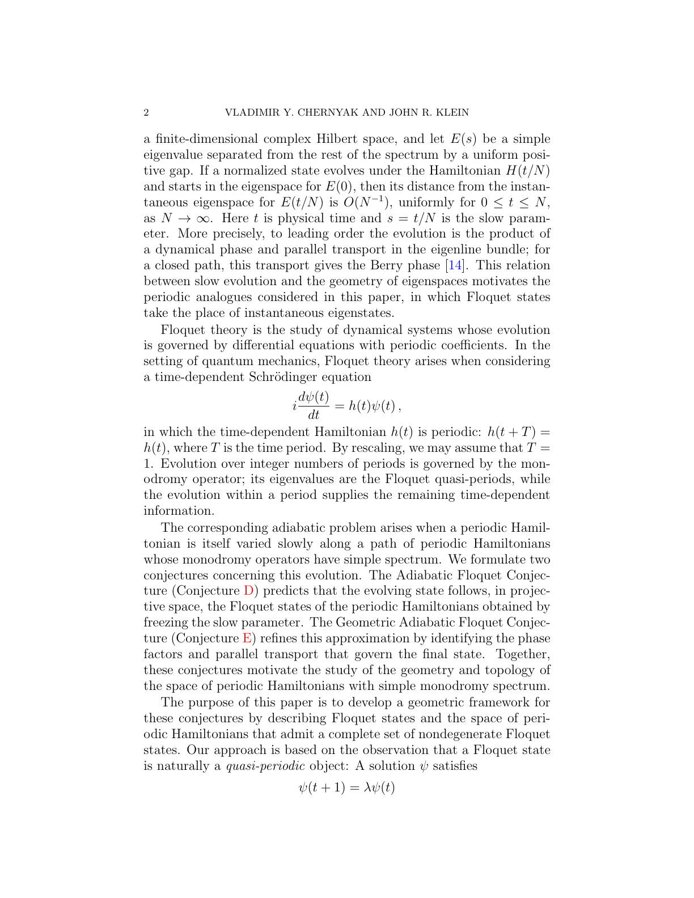
<figcaption class="paper-figure-caption"><b>Fig 1.</b> Low-resolution page preview, page 2</figcaption>
</figure>
<figure class="paper-figure-card">
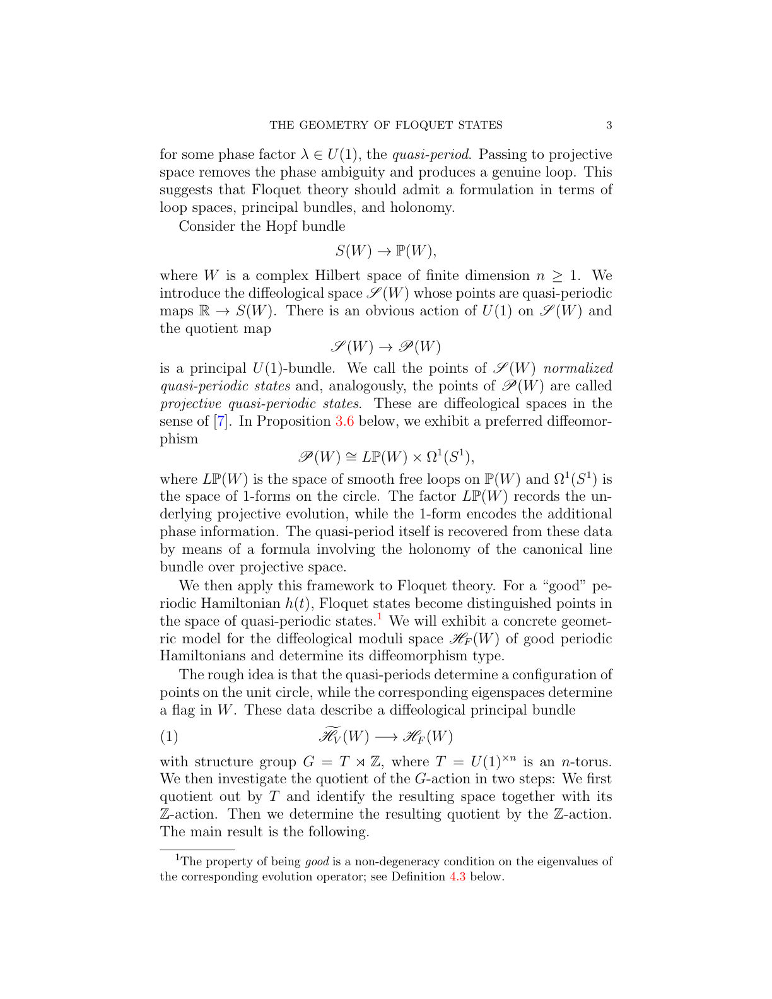
<figcaption class="paper-figure-caption"><b>Fig 2.</b> Low-resolution page preview, page 3</figcaption>
</figure>
<figure class="paper-figure-card">

<figcaption class="paper-figure-caption"><b>Fig 3.</b> Low-resolution page preview, page 4</figcaption>
</figure>
<figure class="paper-figure-card">

<figcaption class="paper-figure-caption"><b>Fig 4.</b> Low-resolution page preview, page 5</figcaption>
</figure>
<figure class="paper-figure-card">

<figcaption class="paper-figure-caption"><b>Fig 5.</b> Low-resolution page preview, page 6</figcaption>
</figure>
</div>

<p><strong>Summary.</strong> This paper develops a rigorous geometric theory for the moduli space of quantum systems described by periodic Hamiltonians with non-degenerate spectra. It determines the topology of this space and formulates conjectures that provide an adiabatic analogue to the quantum mechanical adiabatic theorem. This work is significant for understanding the long-time, slow evolution of quantum states in periodically driven systems.</p>
<p><strong>Why it may be interesting.</strong> This work provides a deep mathematical framework connecting the spectral properties of time-periodic quantum systems (Floquet theory) to sophisticated geometric structures, which is crucial for understanding quantum dynamics in periodically driven systems.</p>
<details>
<summary>Detailed structure</summary>
<p><strong>Main problem.</strong> The paper investigates the mathematical geometry and topology of the moduli space of periodic Hamiltonians that possess a non-degenerate Floquet spectrum.</p>
<p><strong>Main result.</strong> It determines the rational cohomology ring of this moduli space and formulates two conjectures describing the asymptotic quantum evolution under slow adiabatic driving.</p>
<p><strong>Method.</strong> The analysis employs advanced concepts from differential topology, including the use of diffeological spaces, principal bundles, and the formulation of geometric analogues to the adiabatic theorem.</p>
<p><strong>Model / system.</strong> The system is quantum mechanics governed by time-periodic Hamiltonians, $h(t)$, analyzed via Floquet theory. The geometric structure is modeled using quasi-periodic states and associated bundles.</p>
<p><strong>Key observables.</strong> The quasi-period $\lambda$, the final state $   ilde{\psi}(t_2 + N)$, and the error term in the adiabatic approximation, expected to be $O(1/N)$.</p>
<p><strong>Important parameters / regimes.</strong> The large integer parameter $N$ used to define the slow adiabatic limit, and the dimension $n$ of the underlying Hilbert space $W$.</p>
<p><strong>Assumptions / limitations.</strong> The primary assumption is that the Hamiltonian is 'good,' meaning it has a nondegenerate Floquet spectrum. The rigorous proof of the adiabatic conjectures is noted as deferred.</p>
<p><strong>Paper structure.</strong> The paper first establishes the geometric model for the moduli space $ ext{HF}(W)$ and determines its cohomology ring. It then focuses on the adiabatic limit, formulating conjectures (D and E) that describe the evolution when the driving protocol is varied slowly over a long time interval, utilizing connections and phase factors.</p>
</details>
<details>
<summary>Abstract</summary>
<p>This paper studies the moduli space of "good" periodic Hamiltonians, i.e., periodic Hamiltonians with nondegenerate Floquet spectrum. The corresponding Floquet states determine a geometric model for the moduli space of such Hamiltonians. The model is expressed in terms of configuration spaces, flag manifolds, and principal bundles. A corollary of the main result is the complete determination of the rational cohomology ring of the space of good periodic Hamiltonians.   The paper also considers the adiabatic driving of a 1-parameter family of good periodic Hamiltonians. We formulate two conjectures describing the resulting asymptotic quantum evolution. These are Floquet analogues of the adiabatic theorem in quantum mechanics.</p>
</details>
<p><sub><a href="#top">↑ back to top</a></sub></p>
<h2 id="other-papers-29">Other papers (29)</h2>
<p><em>Papers from primary archives without highlighted authors or any topic match. Click to expand.</em></p>
<details>
<summary>Show other papers</summary>

<p><a id="paper-2610.39263"></a></p>
<h3 id="a-vlsi-like-design-and-verification-flow-for-quantum-circuits-a-case-study-in-pi-estimation"><a href="http://arxiv.org/abs/2610.39263v1">A VLSI-Like Design and Verification Flow for Quantum Circuits: A Case Study in PI Estimation</a></h3>
<p><strong>Authors:</strong> Yu-Ting Kao, Yeong-Jar Chang<br>
<strong>Type:</strong> theory · <strong>Category:</strong> quantum information and computing · <strong>PDF:</strong> <a href="https://arxiv.org/pdf/2610.39263v1">https://arxiv.org/pdf/2610.39263v1</a><br>
<strong>Analysis basis:</strong> full PDF text, analyzed in chunks</p>
<div class="figure-strip-hint">↔ Scroll figures horizontally</div>
<div class="paper-figures-scroll">
<figure class="paper-figure-card">

<figcaption class="paper-figure-caption"><b>Fig 1.</b> Fig. 1. Nine-stage verification flow grouped into four design levels: behavioral (Stages 1–3), RTL (Stage 4), gate (Stages 5–8, VLSI and quantum gates), and full circuit (Stage 9).</figcaption>
</figure>
<figure class="paper-figure-card">

<figcaption class="paper-figure-caption"><b>Fig 2.</b> Fig. 3. Gate-level netlist synthesized from Listing 2 by Design Compiler.</figcaption>
</figure>
<figure class="paper-figure-card">

<figcaption class="paper-figure-caption"><b>Fig 3.</b> Fig. 4. (a) The overall QAE circuit. (b) A single controlled-Qcir operation.</figcaption>
</figure>
<figure class="paper-figure-card">

<figcaption class="paper-figure-caption"><b>Fig 4.</b> Fig. 2 makes this comparison concrete. In Fig. 2(a), 54 of 64 random points fall inside the quarter circle, giving π̂ = 4 × 54/64 = 3.375 for this particular draw; another draw gives a different value, with a standard deviation of 0.21 at N = 64. In Fig. 2(b), 52 of the 64 grid points (b = 3) fall inside, giving πb = 3.25 on every run. Random</figcaption>
</figure>
</div>
<p><strong>Summary.</strong> This paper introduces a comprehensive, four-level design and verification methodology, mimicking classical VLSI practices, to systematically build and test quantum circuits. Using $\pi$ estimation via QAE as a case study, it demonstrates how to translate high-level specifications into gate-level quantum implementations. The work is significant for establishing a practical engineering pathway toward deploying fault-tolerant quantum computing.</p>
<p><strong>Why it may be interesting.</strong> The methodology of adapting classical digital design verification flows (like those used in VLSI) to quantum circuits provides a crucial, practical framework for building and debugging complex quantum algorithms.</p>
<details>
<summary>Detailed structure</summary>
<p><strong>Main problem.</strong> The paper addresses the bottleneck of designing and verifying large-scale quantum circuits by proposing a systematic, VLSI-like design and verification flow.</p>
<p><strong>Main result.</strong> The flow successfully demonstrates a systematic path from high-level specifications down to gate-level implementation, while also revealing that classical grid sampling can achieve a quadratic speedup in $\pi$ estimation, potentially bypassing the need for quantum speedup in this specific case.</p>
<p><strong>Method.</strong> A four-level design and verification flow (behavioral, RTL, gate, full-circuit) adapted from classical VLSI design principles is applied to quantum circuits, using Quantum Amplitude Estimation (QAE) for $\pi$ estimation as a case study.</p>
<p><strong>Model / system.</strong> The model involves quantum circuits designed to estimate the probability $p$ that a random point falls within a quarter circle, yielding $\pi = 4p$. The implementation synthesizes classical logic conditions into reversible quantum gates (NCT gates).</p>
<p><strong>Key observables.</strong> The final $\pi$ estimate $\hat{\pi} = 4\cos^2 (rac{\pi k}{2q})$, the standard error from random sampling, and the deterministic bias from grid sampling.</p>
<p><strong>Important parameters / regimes.</strong> Number of bits for coordinates ($b$), number of QFT estimation qubits ($q$), and the measurement outcome ($k$).</p>
<p><strong>Assumptions / limitations.</strong> The primary limitation noted is the deterministic bias introduced by discretization, which cannot be removed by increasing the number of QAE qubits ($q$).</p>
<p><strong>Figures summary.</strong> Figures compare random vs. grid sampling for $\pi$ estimation, and the paper details a nine-stage verification flow across four design levels.</p>
<p><strong>Paper structure.</strong> The paper introduces the four-level design flow, uses $\pi$ estimation via QAE as a case study, details the synthesis from behavioral to gate level, and analyzes the results comparing sampling techniques and verification stages.</p>
</details>
<details>
<summary>Abstract</summary>
<p>This paper proposes a VLSI-like design and verification flow for quantum circuit implementation, covering four levels: behavioral modeling, register-transfer level (RTL), gate level, and full-circuit integration with quantum algorithms. Using quantum Monte Carlo methods for pi estimation as a case study, the proposed flow provides a systematic path from initial specifications to large-scale quantum circuit implementation. The paper highlights two key contributions. First, quantum digital design supports a broad range of applications beyond predefined circuit templates. This capability is particularly important for application-specific operations in algorithms such as Shor's, Grover's, and quantum amplitude estimation (QAE), and can significantly advance fault-tolerant quantum computing (FTQC). Second, classical simulation shows that replacing random sampling with grid sampling can achieve a quadratic improvement in this pi-estimation case without quantum computation. This suggests that the quadratic speedup may arise from the grid sampling strategy rather than from the QAE circuit itself. By adapting conventional VLSI digital design principles, this four-level flow addresses a key bottleneck in quantum circuit design and enables flexible design initiation from multiple entry points, including specifications, RTL, and gate-level descriptions, paving the way for the practical deployment of quantum computing.</p>
</details>
<p><sub><a href="#top">↑ back to top</a></sub></p>

<p><a id="paper-2610.39577"></a></p>
<h3 id="adiabatic-training-of-vqas-for-entanglement-detection"><a href="http://arxiv.org/abs/2610.39577v1">Adiabatic training of VQAs for entanglement detection</a></h3>
<p><strong>Authors:</strong> E. Acosta, C. Cano, D. Manzano, G. Botella<br>
<strong>Type:</strong> theory · <strong>Category:</strong> quantum information and computing · <strong>PDF:</strong> <a href="https://arxiv.org/pdf/2610.39577v1">https://arxiv.org/pdf/2610.39577v1</a><br>
<strong>Analysis basis:</strong> full PDF text, analyzed in chunks</p>
<div class="figure-strip-hint">↔ Scroll figures horizontally</div>
<div class="paper-figures-scroll">
<figure class="paper-figure-card">

<figcaption class="paper-figure-caption"><b>Fig 1.</b> Fig. 1: Hierarchical segmentation and discretization process. a) Search space and corresponding cost function for q = 2 parameters, b) Search space segmentation into pq regions, c) Discretization map in w = 3 points per parameter and segment, d) Level 1 exploration process, e) Level 1 through N exploitation process around region X.</figcaption>
</figure>
<figure class="paper-figure-card">

<figcaption class="paper-figure-caption"><b>Fig 2.</b> Fig. 5: Entangled GHZ, three qubits (q0 through q2). The resulting dataset, shown in Table I, contains a balanced representation of each class: Separable and Entangled (labeled 0 and 1, respectively). Within the Entangled class, records corresponding to each of the subclasses (Bipartite, GHZ and W) are equally balanced as well.</figcaption>
</figure>
<figure class="paper-figure-card">

<figcaption class="paper-figure-caption"><b>Fig 3.</b> Fig. 3: Circuit that generates a Bell pair and an arbitrary single- qubit state. Without loss of generality we select the initial state as |000⟩.</figcaption>
</figure>
<figure class="paper-figure-card">

<figcaption class="paper-figure-caption"><b>Fig 4.</b> Fig. 7: Compared performance of Adiabatic training of VQAs, Classical training of VQAs and classical ANN models for the entanglement detection problem.</figcaption>
</figure>
<figure class="paper-figure-card">

<figcaption class="paper-figure-caption"><b>Fig 5.</b> Fig. 8: Training Accuracy by level on Adiabatic training.</figcaption>
</figure>
</div>
<p><strong>Summary.</strong> This paper introduces a hybrid quantum framework to detect quantum entanglement by training Variational Quantum Algorithms (VQAs). It proposes using an adiabatic quantum computing approach, formulated as a QUBO, to optimize the VQA parameters. The method uses a hierarchical segmentation scheme to manage the complex search space, demonstrating its viability for quantum state classification.</p>
<p><strong>Why it may be interesting.</strong> It directly tackles the fundamental challenge of quantum state characterization (entanglement) using advanced quantum optimization techniques (AQC/QUBO) applied to quantum algorithms (VQAs).</p>
<details>
<summary>Detailed structure</summary>
<p><strong>Main problem.</strong> The core problem addressed is entanglement detection and characterization in quantum states, which is known to be an NP-hard problem.</p>
<p><strong>Main result.</strong> The proposed adiabatic training framework can achieve comparable classification accuracy to conventional VQA methods, offering a novel way to process quantum states without full state tomography.</p>
<p><strong>Method.</strong> The authors propose an adiabatic-inspired optimization strategy for training VQAs, formulating the optimization problem as a QUBO model solved via quantum annealing.</p>
<p><strong>Model / system.</strong> The work focuses on composite quantum systems of $N$ qubits, where the goal is to determine if the state $|\psi
angle$ is separable (a product state) or entangled.</p>
<p><strong>Key observables.</strong> Classification accuracy (separability vs. entanglement) and the Mean Squared Error (MSE) used in the QUBO objective function.</p>
<p><strong>Important parameters / regimes.</strong> The complexity scales with the number of qubits ($N$) and the number of parameters requiring optimization.</p>
<p><strong>Assumptions / limitations.</strong> The approach requires discretizing the continuous parameter space, which introduces a loss of resolution and potential failure to find the global minimum.</p>
<p><strong>Figures summary.</strong> Figures illustrate the hierarchical segmentation and discretization process used in the optimization strategy, and comparison figures show the average classification accuracy across different training methods (Adiabatic, Classic, ANN).</p>
<p><strong>Paper structure.</strong> The paper introduces the entanglement detection problem, proposes the adiabatic-inspired optimization strategy using QUBO, details the hierarchical segmentation for parameter space search, and compares its performance against classical and standard VQA training techniques.</p>
</details>
<details>
<summary>Abstract</summary>
<p>This paper introduces a hybrid quantum framework for training Variational Quantum Algorithms (VQAs) aimed at addressing the fundamental problem of entanglement detection using adiabatic quantum computing. This problem is of foundational significance in quantum information science and has been approached through both classical and quantum methodologies. We propose an adiabatic-inspired optimization strategy for training VQAs, which combines a discretization of the parameter space with a hierarchical segmentation scheme. The optimization problem is formulated as a Quadratic Unconstrained Binary Optimization (QUBO) model to leverage the capabilities of quantum annealing. Preliminary results are compared against classical neural networks and conventional VQA training techniques. The findings aim to stimulate further investigation and discussion within the scientific community regarding the efficacy and applicability of the proposed approach.</p>
</details>
<p><sub><a href="#top">↑ back to top</a></sub></p>

<p><a id="paper-2610.39150"></a></p>
<h3 id="atomic-charge-chirality-from-electric-multipoles"><a href="http://arxiv.org/abs/2610.39150v1">Atomic Charge Chirality from Electric Multipoles</a></h3>
<p><strong>Authors:</strong> Satoru Hayami, Rikuto Oiwa<br>
<strong>Type:</strong> theory · <strong>Category:</strong> strongly correlated electrons · <strong>PDF:</strong> <a href="https://arxiv.org/pdf/2610.39150v1">https://arxiv.org/pdf/2610.39150v1</a><br>
<strong>Analysis basis:</strong> full PDF text, analyzed in chunks</p>
<div class="figure-strip-hint">↔ Scroll figures horizontally</div>
<div class="paper-figures-scroll">
<figure class="paper-figure-card">

<figcaption class="paper-figure-caption"><b>Fig 1.</b> Fig. 1. Representative chiral atomic charge distributions con- structed from electric multipoles. (a),(b) Opposite handednesses for the D4-symmetric combinations Q(c) 44 + Q(s) 54 and Q(c) 44 −Q(s) 54 ,</figcaption>
</figure>
</div>
<p><strong>Summary.</strong> This theoretical work establishes a quantitative criterion using electric multipoles to determine the chirality of local atomic charge distributions in crystals. It shows that chirality is encoded by specific, relative orientations of multipoles belonging to consecutive angular momentum ranks. The findings provide a deep link between crystallographic symmetry and the microscopic electronic structure, while also highlighting limitations based on the available atomic orbital basis.</p>
<p><strong>Why it may be interesting.</strong> While focused on solid-state charge structure, the rigorous mathematical framework connecting symmetry operations (chirality) to the required angular momentum components (multipoles) is highly relevant to understanding symmetry breaking and electronic structure in correlated materials.</p>
<details>
<summary>Detailed structure</summary>
<p><strong>Main problem.</strong> The paper establishes an electric-multipole criterion to characterize the chirality of local atomic charge distributions within crystalline solids.</p>
<p><strong>Main result.</strong> Chirality in axial groups ($C_n, D_n$) arises from the relative orientation of two azimuthal anisotropies at consecutive ranks ($l=n$ and $l=n+1$). Furthermore, the scalar charge density basis is insufficient to encode the handedness for high-symmetry groups like $C_6$ or $D_6$.</p>
<p><strong>Method.</strong> The analysis uses electric multipoles ($Q_{lm}$) and defines a pseudoscalar descriptor ($\chi_n$) that quantifies the relative orientation of anisotropic charge components, linking it to the absence of a common vertical mirror plane.</p>
<p><strong>Model / system.</strong> The study focuses on the charge density $
ho(\mathbf{r})$ of atoms in crystalline structures, analyzing its symmetry properties based on crystallographic point groups ($C_n, D_n, T, O$). The analysis is restricted to a spinless $s$-$p$-$d$-$f$ atomic basis.</p>
<p><strong>Key observables.</strong> The pseudoscalar handedness descriptor ($\chi_n$), the relative orientation of multipoles, and the rank of the required multipoles.</p>
<p><strong>Important parameters / regimes.</strong> The azimuthal index $m=n$ and the consecutive ranks $l=n$ and $l=n+1$ are crucial for generating chirality in $C_n$ and $D_n$ groups.</p>
<p><strong>Assumptions / limitations.</strong> The analysis is limited to the scalar charge density and is constrained by the maximum rank (up to six) available in the $s$-$p$-$d$-$f$ atomic orbital basis.</p>
<p><strong>Figures summary.</strong> Figure 1 visually demonstrates representative chiral charge distributions for tetragonal point groups ($D_4, C_4$).</p>
<p><strong>Paper structure.</strong> The paper first introduces the electric-multipole criterion for chirality, then analyzes the minimal chiral combinations required for axial groups ($C_n, D_n$), discusses the distinct realizations in cubic groups ($T, O$), and concludes by detailing the limitations imposed by the atomic orbital basis.</p>
</details>
<details>
<summary>Abstract</summary>
<p>We establish an electric-multipole ($Q_{lm}$) criterion for chirality of local atomic charge distributions. For the 11 crystallographic chiral point groups, we identify representative lowest-rank multipole contents required to distinguish the opposite handednesses. For the axial groups $C_n$ and $D_n$ with $n=2,3,4,6$, chirality arises from the relative orientation of two azimuthal anisotropies with $m=n$, belonging to consecutive ranks $l=n$ and $n+1$. Their coexistence produces a latitude-dependent twist of the $n$-fold charge distribution. The polar component, although allowed in $C_n$, is distinct from this chiral mechanism and is not required for handedness. The cubic groups $T$ and $O$ exhibit distinct realizations, with octahedral chirality first appearing at rank nine. We further show that, within a spinless $s$-$p$-$d$-$f$ atomic basis, the scalar charge density contains multipoles only up to rank six and therefore cannot encode the handedness of $C_6$, $D_6$, or $O$. These results connect electric-multipole content and atomic orbital degrees of freedom to the microscopic encoding of crystallographic handedness.</p>
</details>
<p><sub><a href="#top">↑ back to top</a></sub></p>

<p><a id="paper-2610.39491"></a></p>
<h3 id="automated-verification-of-hamiltonian-simulation-by-quantum-signal-processing"><a href="http://arxiv.org/abs/2610.39491v1">Automated Verification of Hamiltonian Simulation by Quantum Signal Processing</a></h3>
<p><strong>Authors:</strong> Min Lai, Yu-Fang Chen, Shih-Han Hung<br>
<strong>Type:</strong> theory · <strong>Category:</strong> quantum information and computing · <strong>PDF:</strong> <a href="https://arxiv.org/pdf/2610.39491v1">https://arxiv.org/pdf/2610.39491v1</a><br>
<strong>Analysis basis:</strong> full PDF text, analyzed in chunks</p>
<div class="figure-strip-hint">↔ Scroll figures horizontally</div>
<div class="paper-figures-scroll">
<figure class="paper-figure-card">

<figcaption class="paper-figure-caption"><b>Fig 1.</b> Fig. 3. An example QSP circuit.</figcaption>
</figure>
<figure class="paper-figure-card">

<figcaption class="paper-figure-caption"><b>Fig 2.</b> Fig. 4. Deviation of 𝑝(𝑥) from cos(2𝑥) for 𝑥∈[−1, 1], where 𝑝is defined in (23).</figcaption>
</figure>
</div>
<p><strong>Summary.</strong> This paper introduces the first fully automated verification framework for Hamiltonian simulation circuits built using Quantum Signal Processing (QSP). The framework works by structurally analyzing the circuit in two parts: verifying the block encoding of the Hamiltonian and certifying the polynomial approximation implemented by the QSP layer. This allows for rigorous, scalable verification of complex quantum algorithms without needing to simulate the entire, potentially massive, circuit.</p>
<p><strong>Why it may be interesting.</strong> This work provides a crucial tool for quantum algorithm development by moving beyond simple circuit simulation to provide rigorous, automated guarantees about the fidelity of complex, structure-dependent quantum operations like Hamiltonian simulation.</p>
<details>
<summary>Detailed structure</summary>
<p><strong>Main problem.</strong> The paper addresses the challenge of developing a fully automated and scalable verification framework for quantum circuits used to simulate time evolution governed by a Hamiltonian.</p>
<p><strong>Main result.</strong> They present a structure-aware verifier that can certify the correctness of QSP-based Hamiltonian simulations for large systems (up to 256 qubits) by analyzing the block encoding and QSP layer abstractly.</p>
<p><strong>Method.</strong> The verification framework combines symbolic Pauli-sum semantics with structural analysis to certify two components: the block encoding (proving proportionality to the target Hamiltonian) and the QSP layer (extracting and bounding the implemented polynomial transformation).</p>
<p><strong>Model / system.</strong> The model is quantum computation, specifically simulating the time evolution operator $e^{-iHt}$ for a Hamiltonian $H$ expressed as a weighted sum of Pauli strings. The simulation relies on block encoding techniques and Quantum Signal Processing (QSP).</p>
<p><strong>Key observables.</strong> The primary observables are the error bound ($\epsilon$) on the approximation of the time-evolution operator and the estimated macro-expanded circuit size.</p>
<p><strong>Important parameters / regimes.</strong> System qubit count (up to 256), approximation error $\epsilon$, and the structure of the Pauli-sum Hamiltonian.</p>
<p><strong>Assumptions / limitations.</strong> The framework assumes the Hamiltonian $H$ is structured as a Pauli-sum and that the QSP approximation is valid over the spectral range of the Hamiltonian.</p>
<p><strong>Figures summary.</strong> The notes reference figures illustrating the block encoding of specific Hamiltonians (like $X-Z$) and the general structure of the QSP circuit implementation.</p>
<p><strong>Paper structure.</strong> The paper introduces the problem, details the two-part verification process (block encoding certification and QSP layer certification), demonstrates its application to large-scale benchmarks, and discusses its advantages over general verification tools.</p>
</details>
<details>
<summary>Abstract</summary>
<p>We present, to the best of our knowledge, the first fully automated verification framework for QSP-based Hamiltonian simulation. Our framework exploits the structure of the simulation algorithm: Hamiltonians are given as weighted sums of Pauli strings, embedded into larger unitaries through block encodings, and transformed into time-evolution operators by quantum signal processing (QSP). Using a symbolic Pauli-sum semantics for ancilla-indexed circuit blocks, our verifier proves that the distinguished all-zero ancilla block is proportional to the target Hamiltonian and infers the subnormalization factor automatically. It then verifies the QSP layer by extracting the implemented polynomial transformation and certifying its approximation error. This structure-aware abstraction is essential for scalability. Composing our verified block encoding and QSP wrapper yields an estimated macro-expanded size of about 1.52 million gates. The verifier certifies the block encoding once and checks the QSP layer through its abstract interface, without expanding the oracle calls. Our implementation verifies block encodings of structured Pauli-sum Hamiltonians with up to 256 system qubits and verifies QSP Hamiltonian-simulation instances by extracting their implemented polynomials and checking the resulting approximation bounds. These results show that fully automated verification can handle common Hamiltonian-simulation circuits at substantial scale when it exploits their algorithmic structure.</p>
</details>
<p><sub><a href="#top">↑ back to top</a></sub></p>

<p><a id="paper-2610.40273"></a></p>
<h3 id="bounds-for-general-math1423math-quantum-locally-recoverable-codes"><a href="http://arxiv.org/abs/2610.40273v1">Bounds for General $(r,δ)$-Quantum Locally Recoverable Codes</a></h3>
<p><strong>Authors:</strong> Shuowei Ma, Fei Shi<br>
<strong>Type:</strong> theory · <strong>Category:</strong> quantum information and computing · <strong>PDF:</strong> <a href="https://arxiv.org/pdf/2610.40273v1">https://arxiv.org/pdf/2610.40273v1</a><br>
<strong>Analysis basis:</strong> full PDF text, analyzed in chunks</p>
<div class="figure-strip-hint">↔ Scroll figures horizontally</div>
<div class="paper-figures-scroll">
<figure class="paper-figure-card">

<figcaption class="paper-figure-caption"><b>Fig 1.</b> Fig. 1. An induction step in the proof of Lemma 13. The rectangle denotes [n]. The current set U and the recovery block Λ intersect in J; the hatched region is D = Λ \ U and contains the chosen coordinate j. The current factorization gives ρΛ = ρJ ⊗ρD. Since ρΛ is pure, ρD is pure, allowing U to be enlarged to U′ = U ⊔D. Region areas do not represent coordinate counts.</figcaption>
</figure>
<figure class="paper-figure-card">

<figcaption class="paper-figure-caption"><b>Fig 2.</b> Fig. 2. Updates in the first stage (top) and second stage (bottom). Blue denotes covered coordinates, red denotes selected erasures, and dashed ellipses denote recovery blocks. At each step, all new coordinates of the block in R are covered. The first stage selects t of them as erasures, whereas the second stage selects all of them. Region areas do not represent coordinate counts.</figcaption>
</figure>
</div>
<p><strong>Summary.</strong> This paper develops general upper bounds for quantum locally recoverable codes (qLRCs) by employing advanced information theory techniques. It establishes a Singleton-like bound applicable to arbitrary quantum subspaces, refining it through optimization. The authors demonstrate the tightness of these bounds by constructing explicit families of codes that meet the derived limits.</p>
<p><strong>Why it may be interesting.</strong> The work provides fundamental, general bounds for quantum error correction codes that are applicable beyond the well-studied stabilizer or pure code models, advancing the theoretical understanding of quantum data storage limits.</p>
<details>
<summary>Detailed structure</summary>
<p><strong>Main problem.</strong> The paper establishes rigorous upper bounds for general $(r, \delta)$-quantum locally recoverable codes (qLRCs) without assuming purity or stabilizer structure.</p>
<p><strong>Main result.</strong> It derives a Singleton-like upper bound for general quantum subspaces, which is further tightened by integer optimization, and analyzes three distinct families of codes that attain these bounds.</p>
<p><strong>Method.</strong> The authors employ information-theoretic tools, including selection lemmas, entropy arguments, and integer optimization, to derive necessary conditions for the existence of such codes.</p>
<p><strong>Model / system.</strong> The study concerns quantum error correction codes, specifically qLRCs, which are quantum subspaces $Q$ designed to allow recovery of quantum information even when multiple local erasures occur.</p>
<p><strong>Key observables.</strong> Code parameters $((n, K, d))_q$, locality parameters $(r, \delta)$, quantum entropy $S(\cdot)$, and quantum mutual information $I(\cdot:\cdot)$.</p>
<p><strong>Important parameters / regimes.</strong> The locality parameters $r$ and $\delta$, and the code distance $d$. The bound is refined by $\delta-2$ via integer optimization.</p>
<p><strong>Assumptions / limitations.</strong> The analysis initially addresses general qLRCs without assuming purity or stabilizer structure; later parts utilize assumptions related to the structure of the local support code.</p>
<p><strong>Figures summary.</strong> No specific figures were summarized, but the text discusses structural constraints on recovery blocks and the attainment of bounds by specific code families.</p>
<p><strong>Paper structure.</strong> The paper progresses from establishing the general Singleton-like bound using selection lemmas, to refining this bound via integer optimization, extending the analysis to pure codes by removing partition assumptions, and finally analyzing three specific code families that achieve these derived bounds.</p>
</details>
<details>
<summary>Abstract</summary>
<p>We study general $(r,δ)$-quantum locally recoverable codes (qLRCs) without assuming purity or a stabilizer structure, and with arbitrarily overlapping recovery blocks. Using a selection lemma for multiple-erasure recovery, we establish a Singleton-like upper bound for general quantum subspaces. When $δ=2$, this bound reduces to the general single-erasure bound of Golowich and Guruswami. An integer optimization yields an explicit remainder correction that tightens the bound by up to $δ-2$. For pure codes, local decoupling and entropy arguments extend the parameter bound of Galindo et al., originally obtained for pure stabilizer codes constructed from Euclidean or Hermitian dual-containing classical codes, to arbitrary pure quantum subspaces. We also remove the partition assumption from several existing pure-code bounds for disjoint recovery blocks and obtain a further remainder correction by optimizing the budget. Finally, we analyze three families attaining these bounds: pure codes with overlapping recovery blocks and $d=δ$, which exhibit both a strict improvement of the pure-code bound and simultaneous equality in the pure-code and general bounds; impure codes with disjoint recovery blocks attaining the general bound; and an existing family of pure codes with overlapping recovery blocks and $d>δ$, which simultaneously attains all these bounds.</p>
</details>
<p><sub><a href="#top">↑ back to top</a></sub></p>

<p><a id="paper-2610.40176"></a></p>
<h3 id="cage-related-crystal-field-effects-in-the-paramagnetic-range-of-prbmath1439math"><a href="http://arxiv.org/abs/2610.40176v1">Cage-related crystal-field effects in the paramagnetic range of PrB$_6$</a></h3>
<p><strong>Authors:</strong> Mehdi Amara, Christine Opagiste, Natalya Yu. Shitsevalova<br>
<strong>Type:</strong> experiment · <strong>Category:</strong> strongly correlated electrons · <strong>PDF:</strong> <a href="https://arxiv.org/pdf/2610.40176v1">https://arxiv.org/pdf/2610.40176v1</a><br>
<strong>Analysis basis:</strong> full PDF text, analyzed in chunks</p>
<div class="figure-strip-hint">↔ Scroll figures horizontally</div>
<div class="paper-figures-scroll">
<figure class="paper-figure-card">

<figcaption class="paper-figure-caption"><b>Fig 1.</b> FIG. 1. Experimental specific heat data for PrB6 and baseline curves. The round dots are obtained</figcaption>
</figure>
<figure class="paper-figure-card">

<figcaption class="paper-figure-caption"><b>Fig 2.</b> FIG. 2. Example of a heating pulse at TN. Left part : platform temperature TP as function</figcaption>
</figure>
<figure class="paper-figure-card">

<figcaption class="paper-figure-caption"><b>Fig 3.</b> FIG. 3. Example of a heating pulse at T ∗. Left part: platform temperature TP as function of time.</figcaption>
</figure>
<figure class="paper-figure-card">

<figcaption class="paper-figure-caption"><b>Fig 4.</b> FIG. 4. Temperature dependence of PrB6 Smag magnetic entropy as obtained from the specific</figcaption>
</figure>
<figure class="paper-figure-card">

<figcaption class="paper-figure-caption"><b>Fig 5.</b> FIG. 5. Temperature dependence of PrB6 inverse first-order magnetic susceptibility per atom,</figcaption>
</figure>
</div>
<p><strong>Summary.</strong> This work uses detailed measurements of specific heat, thermal expansion, and magnetization on PrB6 to probe its magnetic behavior in the paramagnetic regime. The key finding suggests that the crystal-field ground state undergoes a dynamical splitting, evidenced by the measured magnetic entropy matching a doublet state rather than the expected triplet state. This points toward complex electronic interactions within the boron cage structure.</p>
<p><strong>Why it may be interesting.</strong> The investigation into how crystal-field effects manifest in the thermal properties and magnetic entropy of a solid-state material provides insights into strong electronic correlations and orbital degrees of freedom.</p>
<details>
<summary>Detailed structure</summary>
<p><strong>Main problem.</strong> The study aims to gain new insights into the paramagnetic range of PrB6 below 50 K, specifically investigating cage-related crystal-field effects.</p>
<p><strong>Main result.</strong> The magnetic entropy immediately above the first-order magnetic ordering temperature is close to that of a doublet, suggesting a dynamical splitting of the crystal-field ground state within the boron cage.</p>
<p><strong>Method.</strong> The research combines specific-heat, thermal-expansion, and magnetic susceptibility measurements to analyze the thermal variation of the magnetic entropy.</p>
<p><strong>Model / system.</strong> The physical system is the rare-earth hexaboride compound PrB6. The analysis compares experimental data against theoretical models describing crystal-field splitting and lattice contributions.</p>
<p><strong>Key observables.</strong> Magnetic entropy per Pr3+, latent heats of magnetic transitions (T_N=6.7 K, T*=3.9 K), low-temperature paramagnetic susceptibility, and thermal expansion anomalies.</p>
<p><strong>Important parameters / regimes.</strong> Temperatures below 50 K, the magnetic ordering temperatures (T_N, T*), and the comparison between doublet/triplet ground state entropies.</p>
<p><strong>Assumptions / limitations.</strong> The analysis requires an improved description of the lattice contribution to the specific heat, and the interpretation relies on analogies with CeB6.</p>
<p><strong>Figures summary.</strong> Figures show specific heat data, latent heat calculations at magnetic transitions, and thermal expansion comparisons between PrB6 and non-magnetic references.</p>
<p><strong>Paper structure.</strong> The paper progresses by first measuring thermodynamic quantities (specific heat, thermal expansion) to determine magnetic entropy changes across magnetic transitions, then analyzing the low-temperature susceptibility and thermal expansion anomalies to deduce the nature of the crystal-field ground state splitting.</p>
</details>
<details>
<summary>Abstract</summary>
<p>New insights into the paramagnetic range of PrB$_6$ below 50 K are revealed through specific-heat, thermal-expansion and magnetic measurements. The latent heats of the two successive magnetic transitions, together with an improved description of the lattice contribution, enable a detailed determination of the thermal variation of the magnetic entropy. Immediately above the first-order magnetic ordering temperature ($T_N = 6.7$ K), the magnetic entropy per Pr$^{3+}$ is close to that of a doublet, instead of the triplet crystal-field ground state identified by inelastic neutron scattering. Temperatures in excess of 30 K are required to reach the entropy of the threefold-degenerate ground state. This is reminiscent of the CeB$_6$ case and, similarly, strongly suggests a dynamical splitting of the crystal-field ground state within the boron cage. Further evidence of this splitting is provided by the analysis of the low-temperature paramagnetic susceptibility, which resembles that of a non-magnetic ground state. In addition, a large thermal-expansion anomaly is observed below 20 K, consistent with the expected centrifugal Jahn-Teller effect.</p>
</details>
<p><sub><a href="#top">↑ back to top</a></sub></p>
<hr>
<p>
<a href="index.html">← Index</a>
 · <a href="papers_07.html">← Previous</a> · <a href="papers_09.html">Next →</a>
</p>
<hr>

</body>
</html>
